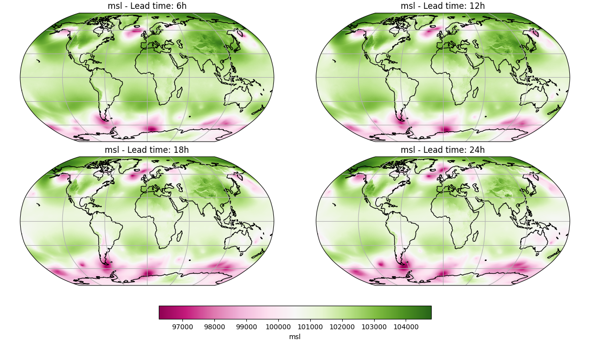

Note
Go to the end to download the full example code.
Creating a Local Data Source#
Create and save an offline dataset to use in an inference pipeline.
This example demonstrates how to:
Build a small offline dataset by fetching data and writing to a Zarr store
Load the local store as a data source for an inference pipeline with the Microsoft Aurora model
Run the deterministic workflow and plot results
# /// script
# dependencies = [
# "earth2studio[aurora] @ git+https://github.com/NVIDIA/earth2studio.git@0.16.0",
# "cartopy",
# ]
# ///
Set Up#
For this example, the following are needed:
Prognostic Model: Use the built-in Aurora 6-hour model
earth2studio.models.px.Aurora.Data source: Pull data from the WeatherBench2 data API
earth2studio.data.WB2ERA5.
import os
os.makedirs("outputs", exist_ok=True)
from dotenv import load_dotenv
load_dotenv()
from earth2studio.data import WB2ERA5, fetch_data
from earth2studio.models.px import Aurora
# Load the default model package which downloads the checkpoint from GCP
package = Aurora.load_default_package()
model = Aurora.load_model(package)
# Create the data source, cache is false
wb2 = WB2ERA5(cache=False, verbose=False)
Downloading aurora-0.25-static-z.npy: 0%| | 0.00/3.96M [00:00<?, ?B/s]
Downloading aurora-0.25-static-z.npy: 100%|██████████| 3.96M/3.96M [00:00<00:00, 16.4MB/s]
Downloading aurora-0.25-static-z.npy: 100%|██████████| 3.96M/3.96M [00:00<00:00, 16.2MB/s]
Downloading aurora-0.25-static-slt.npy: 0%| | 0.00/3.96M [00:00<?, ?B/s]
Downloading aurora-0.25-static-slt.npy: 100%|██████████| 3.96M/3.96M [00:00<00:00, 15.8MB/s]
Downloading aurora-0.25-static-slt.npy: 100%|██████████| 3.96M/3.96M [00:00<00:00, 15.6MB/s]
Downloading aurora-0.25-static-lsm.npy: 0%| | 0.00/3.96M [00:00<?, ?B/s]
Downloading aurora-0.25-static-lsm.npy: 100%|██████████| 3.96M/3.96M [00:00<00:00, 10.4MB/s]
Downloading aurora-0.25-static-lsm.npy: 100%|██████████| 3.96M/3.96M [00:00<00:00, 10.3MB/s]
Downloading aurora-0.25-pretrained.ckpt: 0%| | 0.00/4.68G [00:00<?, ?B/s]
Downloading aurora-0.25-pretrained.ckpt: 0%| | 10.0M/4.68G [00:00<07:00, 11.9MB/s]
Downloading aurora-0.25-pretrained.ckpt: 0%| | 20.0M/4.68G [00:01<04:05, 20.3MB/s]
Downloading aurora-0.25-pretrained.ckpt: 1%| | 30.0M/4.68G [00:01<03:18, 25.1MB/s]
Downloading aurora-0.25-pretrained.ckpt: 1%| | 40.0M/4.68G [00:01<02:46, 29.9MB/s]
Downloading aurora-0.25-pretrained.ckpt: 1%| | 50.0M/4.68G [00:01<02:14, 36.9MB/s]
Downloading aurora-0.25-pretrained.ckpt: 1%|▏ | 60.0M/4.68G [00:02<02:24, 34.3MB/s]
Downloading aurora-0.25-pretrained.ckpt: 1%|▏ | 70.0M/4.68G [00:02<02:53, 28.6MB/s]
Downloading aurora-0.25-pretrained.ckpt: 2%|▏ | 80.0M/4.68G [00:02<02:20, 35.1MB/s]
Downloading aurora-0.25-pretrained.ckpt: 2%|▏ | 90.0M/4.68G [00:03<02:01, 40.4MB/s]
Downloading aurora-0.25-pretrained.ckpt: 2%|▏ | 100M/4.68G [00:03<03:00, 27.3MB/s]
Downloading aurora-0.25-pretrained.ckpt: 2%|▏ | 110M/4.68G [00:03<02:34, 31.9MB/s]
Downloading aurora-0.25-pretrained.ckpt: 3%|▎ | 120M/4.68G [00:04<02:12, 36.9MB/s]
Downloading aurora-0.25-pretrained.ckpt: 3%|▎ | 130M/4.68G [00:04<03:06, 26.2MB/s]
Downloading aurora-0.25-pretrained.ckpt: 3%|▎ | 140M/4.68G [00:04<02:27, 33.0MB/s]
Downloading aurora-0.25-pretrained.ckpt: 3%|▎ | 150M/4.68G [00:04<02:00, 40.6MB/s]
Downloading aurora-0.25-pretrained.ckpt: 3%|▎ | 160M/4.68G [00:05<02:23, 33.8MB/s]
Downloading aurora-0.25-pretrained.ckpt: 4%|▎ | 170M/4.68G [00:05<01:58, 41.1MB/s]
Downloading aurora-0.25-pretrained.ckpt: 4%|▍ | 180M/4.68G [00:05<01:42, 47.2MB/s]
Downloading aurora-0.25-pretrained.ckpt: 4%|▍ | 190M/4.68G [00:05<01:40, 48.2MB/s]
Downloading aurora-0.25-pretrained.ckpt: 4%|▍ | 200M/4.68G [00:06<02:38, 30.3MB/s]
Downloading aurora-0.25-pretrained.ckpt: 4%|▍ | 210M/4.68G [00:06<02:18, 34.7MB/s]
Downloading aurora-0.25-pretrained.ckpt: 5%|▍ | 220M/4.68G [00:06<02:02, 39.2MB/s]
Downloading aurora-0.25-pretrained.ckpt: 5%|▍ | 230M/4.68G [00:07<01:57, 40.6MB/s]
Downloading aurora-0.25-pretrained.ckpt: 5%|▌ | 240M/4.68G [00:07<01:44, 45.7MB/s]
Downloading aurora-0.25-pretrained.ckpt: 5%|▌ | 250M/4.68G [00:07<02:04, 38.2MB/s]
Downloading aurora-0.25-pretrained.ckpt: 5%|▌ | 260M/4.68G [00:08<02:49, 28.0MB/s]
Downloading aurora-0.25-pretrained.ckpt: 6%|▌ | 270M/4.68G [00:08<02:26, 32.3MB/s]
Downloading aurora-0.25-pretrained.ckpt: 6%|▌ | 280M/4.68G [00:08<02:12, 35.6MB/s]
Downloading aurora-0.25-pretrained.ckpt: 6%|▌ | 290M/4.68G [00:09<02:08, 36.7MB/s]
Downloading aurora-0.25-pretrained.ckpt: 6%|▋ | 300M/4.68G [00:09<01:57, 40.1MB/s]
Downloading aurora-0.25-pretrained.ckpt: 6%|▋ | 310M/4.68G [00:09<01:49, 43.0MB/s]
Downloading aurora-0.25-pretrained.ckpt: 7%|▋ | 320M/4.68G [00:09<02:25, 32.2MB/s]
Downloading aurora-0.25-pretrained.ckpt: 7%|▋ | 330M/4.68G [00:10<01:59, 39.1MB/s]
Downloading aurora-0.25-pretrained.ckpt: 7%|▋ | 340M/4.68G [00:10<01:39, 47.0MB/s]
Downloading aurora-0.25-pretrained.ckpt: 7%|▋ | 350M/4.68G [00:10<01:50, 42.2MB/s]
Downloading aurora-0.25-pretrained.ckpt: 8%|▊ | 360M/4.68G [00:10<01:33, 49.9MB/s]
Downloading aurora-0.25-pretrained.ckpt: 8%|▊ | 370M/4.68G [00:10<01:21, 57.2MB/s]
Downloading aurora-0.25-pretrained.ckpt: 8%|▊ | 380M/4.68G [00:11<01:38, 47.0MB/s]
Downloading aurora-0.25-pretrained.ckpt: 8%|▊ | 390M/4.68G [00:11<02:35, 29.7MB/s]
Downloading aurora-0.25-pretrained.ckpt: 8%|▊ | 400M/4.68G [00:11<02:13, 34.4MB/s]
Downloading aurora-0.25-pretrained.ckpt: 9%|▊ | 410M/4.68G [00:12<02:02, 37.6MB/s]
Downloading aurora-0.25-pretrained.ckpt: 9%|▉ | 420M/4.68G [00:12<02:15, 34.0MB/s]
Downloading aurora-0.25-pretrained.ckpt: 9%|▉ | 430M/4.68G [00:12<02:39, 28.8MB/s]
Downloading aurora-0.25-pretrained.ckpt: 9%|▉ | 440M/4.68G [00:13<02:06, 36.0MB/s]
Downloading aurora-0.25-pretrained.ckpt: 9%|▉ | 450M/4.68G [00:13<01:54, 39.8MB/s]
Downloading aurora-0.25-pretrained.ckpt: 10%|▉ | 460M/4.68G [00:13<01:35, 47.4MB/s]
Downloading aurora-0.25-pretrained.ckpt: 10%|▉ | 470M/4.68G [00:13<01:22, 54.8MB/s]
Downloading aurora-0.25-pretrained.ckpt: 10%|█ | 480M/4.68G [00:13<01:40, 45.1MB/s]
Downloading aurora-0.25-pretrained.ckpt: 10%|█ | 490M/4.68G [00:14<01:25, 52.8MB/s]
Downloading aurora-0.25-pretrained.ckpt: 10%|█ | 500M/4.68G [00:14<01:15, 59.8MB/s]
Downloading aurora-0.25-pretrained.ckpt: 11%|█ | 510M/4.68G [00:14<01:08, 66.0MB/s]
Downloading aurora-0.25-pretrained.ckpt: 11%|█ | 520M/4.68G [00:14<02:17, 32.6MB/s]
Downloading aurora-0.25-pretrained.ckpt: 11%|█ | 530M/4.68G [00:15<01:58, 37.7MB/s]
Downloading aurora-0.25-pretrained.ckpt: 11%|█▏ | 540M/4.68G [00:15<02:09, 34.5MB/s]
Downloading aurora-0.25-pretrained.ckpt: 11%|█▏ | 550M/4.68G [00:15<01:45, 42.1MB/s]
Downloading aurora-0.25-pretrained.ckpt: 12%|█▏ | 560M/4.68G [00:15<01:29, 49.8MB/s]
Downloading aurora-0.25-pretrained.ckpt: 12%|█▏ | 570M/4.68G [00:15<01:25, 52.0MB/s]
Downloading aurora-0.25-pretrained.ckpt: 12%|█▏ | 580M/4.68G [00:16<01:52, 39.2MB/s]
Downloading aurora-0.25-pretrained.ckpt: 12%|█▏ | 590M/4.68G [00:16<01:33, 46.9MB/s]
Downloading aurora-0.25-pretrained.ckpt: 13%|█▎ | 600M/4.68G [00:16<01:20, 54.4MB/s]
Downloading aurora-0.25-pretrained.ckpt: 13%|█▎ | 610M/4.68G [00:16<01:20, 54.7MB/s]
Downloading aurora-0.25-pretrained.ckpt: 13%|█▎ | 620M/4.68G [00:16<01:11, 61.6MB/s]
Downloading aurora-0.25-pretrained.ckpt: 13%|█▎ | 630M/4.68G [00:17<01:08, 63.3MB/s]
Downloading aurora-0.25-pretrained.ckpt: 13%|█▎ | 640M/4.68G [00:17<01:50, 39.5MB/s]
Downloading aurora-0.25-pretrained.ckpt: 14%|█▎ | 650M/4.68G [00:17<01:37, 44.4MB/s]
Downloading aurora-0.25-pretrained.ckpt: 14%|█▍ | 660M/4.68G [00:17<01:26, 50.4MB/s]
Downloading aurora-0.25-pretrained.ckpt: 14%|█▍ | 670M/4.68G [00:18<01:46, 40.6MB/s]
Downloading aurora-0.25-pretrained.ckpt: 14%|█▍ | 680M/4.68G [00:18<01:32, 46.4MB/s]
Downloading aurora-0.25-pretrained.ckpt: 14%|█▍ | 690M/4.68G [00:18<01:21, 52.7MB/s]
Downloading aurora-0.25-pretrained.ckpt: 15%|█▍ | 700M/4.68G [00:19<02:04, 34.5MB/s]
Downloading aurora-0.25-pretrained.ckpt: 15%|█▍ | 710M/4.68G [00:19<02:35, 27.6MB/s]
Downloading aurora-0.25-pretrained.ckpt: 15%|█▌ | 720M/4.68G [00:19<02:11, 32.4MB/s]
Downloading aurora-0.25-pretrained.ckpt: 15%|█▌ | 730M/4.68G [00:20<02:04, 34.3MB/s]
Downloading aurora-0.25-pretrained.ckpt: 15%|█▌ | 740M/4.68G [00:20<01:59, 35.5MB/s]
Downloading aurora-0.25-pretrained.ckpt: 16%|█▌ | 750M/4.68G [00:20<01:39, 42.5MB/s]
Downloading aurora-0.25-pretrained.ckpt: 16%|█▌ | 760M/4.68G [00:20<01:33, 45.2MB/s]
Downloading aurora-0.25-pretrained.ckpt: 16%|█▌ | 770M/4.68G [00:21<02:57, 23.8MB/s]
Downloading aurora-0.25-pretrained.ckpt: 16%|█▋ | 780M/4.68G [00:21<02:24, 29.0MB/s]
Downloading aurora-0.25-pretrained.ckpt: 16%|█▋ | 790M/4.68G [00:21<02:01, 34.5MB/s]
Downloading aurora-0.25-pretrained.ckpt: 17%|█▋ | 800M/4.68G [00:22<02:12, 31.5MB/s]
Downloading aurora-0.25-pretrained.ckpt: 17%|█▋ | 810M/4.68G [00:22<01:56, 36.0MB/s]
Downloading aurora-0.25-pretrained.ckpt: 17%|█▋ | 820M/4.68G [00:22<01:42, 40.5MB/s]
Downloading aurora-0.25-pretrained.ckpt: 17%|█▋ | 830M/4.68G [00:23<01:59, 34.9MB/s]
Downloading aurora-0.25-pretrained.ckpt: 18%|█▊ | 840M/4.68G [00:23<02:15, 30.6MB/s]
Downloading aurora-0.25-pretrained.ckpt: 18%|█▊ | 850M/4.68G [00:23<01:48, 38.0MB/s]
Downloading aurora-0.25-pretrained.ckpt: 18%|█▊ | 860M/4.68G [00:23<01:36, 42.5MB/s]
Downloading aurora-0.25-pretrained.ckpt: 18%|█▊ | 870M/4.68G [00:23<01:21, 50.3MB/s]
Downloading aurora-0.25-pretrained.ckpt: 18%|█▊ | 880M/4.68G [00:24<01:11, 57.5MB/s]
Downloading aurora-0.25-pretrained.ckpt: 19%|█▊ | 890M/4.68G [00:24<01:17, 53.1MB/s]
Downloading aurora-0.25-pretrained.ckpt: 19%|█▉ | 900M/4.68G [00:24<01:38, 41.3MB/s]
Downloading aurora-0.25-pretrained.ckpt: 19%|█▉ | 910M/4.68G [00:24<01:23, 49.0MB/s]
Downloading aurora-0.25-pretrained.ckpt: 19%|█▉ | 920M/4.68G [00:24<01:12, 56.4MB/s]
Downloading aurora-0.25-pretrained.ckpt: 19%|█▉ | 930M/4.68G [00:25<01:40, 40.4MB/s]
Downloading aurora-0.25-pretrained.ckpt: 20%|█▉ | 940M/4.68G [00:25<01:22, 48.9MB/s]
Downloading aurora-0.25-pretrained.ckpt: 20%|█▉ | 950M/4.68G [00:25<01:12, 55.9MB/s]
Downloading aurora-0.25-pretrained.ckpt: 20%|██ | 960M/4.68G [00:25<01:16, 52.6MB/s]
Downloading aurora-0.25-pretrained.ckpt: 20%|██ | 970M/4.68G [00:25<01:09, 57.9MB/s]
Downloading aurora-0.25-pretrained.ckpt: 20%|██ | 980M/4.68G [00:26<01:02, 64.2MB/s]
Downloading aurora-0.25-pretrained.ckpt: 21%|██ | 990M/4.68G [00:26<01:17, 51.8MB/s]
Downloading aurora-0.25-pretrained.ckpt: 21%|██ | 0.98G/4.68G [00:26<01:07, 59.0MB/s]
Downloading aurora-0.25-pretrained.ckpt: 21%|██ | 0.99G/4.68G [00:26<01:00, 65.1MB/s]
Downloading aurora-0.25-pretrained.ckpt: 21%|██▏ | 1.00G/4.68G [00:26<00:56, 69.6MB/s]
Downloading aurora-0.25-pretrained.ckpt: 21%|██▏ | 1.01G/4.68G [00:27<01:19, 49.4MB/s]
Downloading aurora-0.25-pretrained.ckpt: 22%|██▏ | 1.02G/4.68G [00:27<01:09, 56.8MB/s]
Downloading aurora-0.25-pretrained.ckpt: 22%|██▏ | 1.03G/4.68G [00:27<01:01, 63.3MB/s]
Downloading aurora-0.25-pretrained.ckpt: 22%|██▏ | 1.04G/4.68G [00:27<01:49, 35.6MB/s]
Downloading aurora-0.25-pretrained.ckpt: 22%|██▏ | 1.04G/4.68G [00:28<01:30, 43.3MB/s]
Downloading aurora-0.25-pretrained.ckpt: 23%|██▎ | 1.05G/4.68G [00:28<01:16, 50.8MB/s]
Downloading aurora-0.25-pretrained.ckpt: 23%|██▎ | 1.06G/4.68G [00:28<02:10, 29.7MB/s]
Downloading aurora-0.25-pretrained.ckpt: 23%|██▎ | 1.07G/4.68G [00:29<01:44, 37.0MB/s]
Downloading aurora-0.25-pretrained.ckpt: 23%|██▎ | 1.08G/4.68G [00:29<01:26, 44.6MB/s]
Downloading aurora-0.25-pretrained.ckpt: 23%|██▎ | 1.09G/4.68G [00:29<02:07, 30.1MB/s]
Downloading aurora-0.25-pretrained.ckpt: 24%|██▎ | 1.10G/4.68G [00:29<01:42, 37.5MB/s]
Downloading aurora-0.25-pretrained.ckpt: 24%|██▍ | 1.11G/4.68G [00:30<01:24, 45.2MB/s]
Downloading aurora-0.25-pretrained.ckpt: 24%|██▍ | 1.12G/4.68G [00:30<01:22, 46.3MB/s]
Downloading aurora-0.25-pretrained.ckpt: 24%|██▍ | 1.13G/4.68G [00:30<01:49, 34.9MB/s]
Downloading aurora-0.25-pretrained.ckpt: 24%|██▍ | 1.14G/4.68G [00:30<01:29, 42.3MB/s]
Downloading aurora-0.25-pretrained.ckpt: 25%|██▍ | 1.15G/4.68G [00:31<01:56, 32.5MB/s]
Downloading aurora-0.25-pretrained.ckpt: 25%|██▍ | 1.16G/4.68G [00:31<01:34, 40.0MB/s]
Downloading aurora-0.25-pretrained.ckpt: 25%|██▌ | 1.17G/4.68G [00:31<01:18, 47.7MB/s]
Downloading aurora-0.25-pretrained.ckpt: 25%|██▌ | 1.18G/4.68G [00:31<01:21, 46.0MB/s]
Downloading aurora-0.25-pretrained.ckpt: 25%|██▌ | 1.19G/4.68G [00:32<02:04, 30.1MB/s]
Downloading aurora-0.25-pretrained.ckpt: 26%|██▌ | 1.20G/4.68G [00:32<01:39, 37.4MB/s]
Downloading aurora-0.25-pretrained.ckpt: 26%|██▌ | 1.21G/4.68G [00:32<01:22, 45.1MB/s]
Downloading aurora-0.25-pretrained.ckpt: 26%|██▌ | 1.22G/4.68G [00:32<01:21, 45.4MB/s]
Downloading aurora-0.25-pretrained.ckpt: 26%|██▋ | 1.23G/4.68G [00:33<01:09, 53.1MB/s]
Downloading aurora-0.25-pretrained.ckpt: 26%|██▋ | 1.24G/4.68G [00:33<01:29, 41.1MB/s]
Downloading aurora-0.25-pretrained.ckpt: 27%|██▋ | 1.25G/4.68G [00:34<02:09, 28.5MB/s]
Downloading aurora-0.25-pretrained.ckpt: 27%|██▋ | 1.26G/4.68G [00:34<01:43, 35.4MB/s]
Downloading aurora-0.25-pretrained.ckpt: 27%|██▋ | 1.27G/4.68G [00:34<01:24, 43.4MB/s]
Downloading aurora-0.25-pretrained.ckpt: 27%|██▋ | 1.28G/4.68G [00:34<01:33, 39.0MB/s]
Downloading aurora-0.25-pretrained.ckpt: 28%|██▊ | 1.29G/4.68G [00:34<01:17, 46.7MB/s]
Downloading aurora-0.25-pretrained.ckpt: 28%|██▊ | 1.30G/4.68G [00:34<01:07, 54.2MB/s]
Downloading aurora-0.25-pretrained.ckpt: 28%|██▊ | 1.31G/4.68G [00:35<01:34, 38.3MB/s]
Downloading aurora-0.25-pretrained.ckpt: 28%|██▊ | 1.32G/4.68G [00:35<01:58, 30.4MB/s]
Downloading aurora-0.25-pretrained.ckpt: 28%|██▊ | 1.33G/4.68G [00:35<01:35, 37.7MB/s]
Downloading aurora-0.25-pretrained.ckpt: 29%|██▊ | 1.34G/4.68G [00:36<01:18, 45.4MB/s]
Downloading aurora-0.25-pretrained.ckpt: 29%|██▉ | 1.35G/4.68G [00:36<01:14, 47.7MB/s]
Downloading aurora-0.25-pretrained.ckpt: 29%|██▉ | 1.36G/4.68G [00:36<01:04, 55.1MB/s]
Downloading aurora-0.25-pretrained.ckpt: 29%|██▉ | 1.37G/4.68G [00:36<00:57, 61.9MB/s]
Downloading aurora-0.25-pretrained.ckpt: 29%|██▉ | 1.38G/4.68G [00:36<01:12, 49.2MB/s]
Downloading aurora-0.25-pretrained.ckpt: 30%|██▉ | 1.39G/4.68G [00:37<01:10, 50.3MB/s]
Downloading aurora-0.25-pretrained.ckpt: 30%|██▉ | 1.40G/4.68G [00:37<01:01, 57.4MB/s]
Downloading aurora-0.25-pretrained.ckpt: 30%|███ | 1.41G/4.68G [00:37<01:36, 36.5MB/s]
Downloading aurora-0.25-pretrained.ckpt: 30%|███ | 1.42G/4.68G [00:37<01:19, 44.2MB/s]
Downloading aurora-0.25-pretrained.ckpt: 30%|███ | 1.43G/4.68G [00:37<01:07, 51.8MB/s]
Downloading aurora-0.25-pretrained.ckpt: 31%|███ | 1.44G/4.68G [00:38<01:28, 39.5MB/s]
Downloading aurora-0.25-pretrained.ckpt: 31%|███ | 1.45G/4.68G [00:38<01:56, 29.8MB/s]
Downloading aurora-0.25-pretrained.ckpt: 31%|███ | 1.46G/4.68G [00:39<01:38, 35.3MB/s]
Downloading aurora-0.25-pretrained.ckpt: 31%|███▏ | 1.46G/4.68G [00:39<01:59, 28.8MB/s]
Downloading aurora-0.25-pretrained.ckpt: 32%|███▏ | 1.47G/4.68G [00:39<01:39, 34.7MB/s]
Downloading aurora-0.25-pretrained.ckpt: 32%|███▏ | 1.48G/4.68G [00:39<01:21, 42.3MB/s]
Downloading aurora-0.25-pretrained.ckpt: 32%|███▏ | 1.49G/4.68G [00:40<01:24, 40.4MB/s]
Downloading aurora-0.25-pretrained.ckpt: 32%|███▏ | 1.50G/4.68G [00:40<01:56, 29.2MB/s]
Downloading aurora-0.25-pretrained.ckpt: 32%|███▏ | 1.51G/4.68G [00:40<01:46, 32.0MB/s]
Downloading aurora-0.25-pretrained.ckpt: 33%|███▎ | 1.52G/4.68G [00:41<01:38, 34.4MB/s]
Downloading aurora-0.25-pretrained.ckpt: 33%|███▎ | 1.53G/4.68G [00:42<02:57, 19.0MB/s]
Downloading aurora-0.25-pretrained.ckpt: 33%|███▎ | 1.54G/4.68G [00:42<02:17, 24.5MB/s]
Downloading aurora-0.25-pretrained.ckpt: 33%|███▎ | 1.55G/4.68G [00:42<01:54, 29.5MB/s]
Downloading aurora-0.25-pretrained.ckpt: 33%|███▎ | 1.56G/4.68G [00:43<03:14, 17.2MB/s]
Downloading aurora-0.25-pretrained.ckpt: 34%|███▎ | 1.57G/4.68G [00:44<02:27, 22.7MB/s]
Downloading aurora-0.25-pretrained.ckpt: 34%|███▍ | 1.58G/4.68G [00:44<01:58, 28.1MB/s]
Downloading aurora-0.25-pretrained.ckpt: 34%|███▍ | 1.59G/4.68G [00:45<03:16, 16.8MB/s]
Downloading aurora-0.25-pretrained.ckpt: 34%|███▍ | 1.60G/4.68G [00:45<02:32, 21.7MB/s]
Downloading aurora-0.25-pretrained.ckpt: 34%|███▍ | 1.61G/4.68G [00:46<02:38, 20.8MB/s]
Downloading aurora-0.25-pretrained.ckpt: 35%|███▍ | 1.62G/4.68G [00:46<02:48, 19.4MB/s]
Downloading aurora-0.25-pretrained.ckpt: 35%|███▍ | 1.63G/4.68G [00:47<02:45, 19.8MB/s]
Downloading aurora-0.25-pretrained.ckpt: 35%|███▌ | 1.64G/4.68G [00:47<02:06, 25.8MB/s]
Downloading aurora-0.25-pretrained.ckpt: 35%|███▌ | 1.65G/4.68G [00:47<01:39, 32.6MB/s]
Downloading aurora-0.25-pretrained.ckpt: 35%|███▌ | 1.66G/4.68G [00:47<01:34, 34.3MB/s]
Downloading aurora-0.25-pretrained.ckpt: 36%|███▌ | 1.67G/4.68G [00:47<01:17, 41.9MB/s]
Downloading aurora-0.25-pretrained.ckpt: 36%|███▌ | 1.68G/4.68G [00:47<01:04, 49.6MB/s]
Downloading aurora-0.25-pretrained.ckpt: 36%|███▌ | 1.69G/4.68G [00:48<01:18, 41.2MB/s]
Downloading aurora-0.25-pretrained.ckpt: 36%|███▋ | 1.70G/4.68G [00:48<01:05, 48.6MB/s]
Downloading aurora-0.25-pretrained.ckpt: 37%|███▋ | 1.71G/4.68G [00:48<00:56, 56.3MB/s]
Downloading aurora-0.25-pretrained.ckpt: 37%|███▋ | 1.72G/4.68G [00:48<00:50, 62.9MB/s]
Downloading aurora-0.25-pretrained.ckpt: 37%|███▋ | 1.73G/4.68G [00:48<00:46, 68.6MB/s]
Downloading aurora-0.25-pretrained.ckpt: 37%|███▋ | 1.74G/4.68G [00:48<00:43, 73.1MB/s]
Downloading aurora-0.25-pretrained.ckpt: 37%|███▋ | 1.75G/4.68G [00:49<00:46, 67.4MB/s]
Downloading aurora-0.25-pretrained.ckpt: 38%|███▊ | 1.76G/4.68G [00:49<01:18, 39.7MB/s]
Downloading aurora-0.25-pretrained.ckpt: 38%|███▊ | 1.77G/4.68G [00:49<01:05, 47.4MB/s]
Downloading aurora-0.25-pretrained.ckpt: 38%|███▊ | 1.78G/4.68G [00:50<01:11, 43.5MB/s]
Downloading aurora-0.25-pretrained.ckpt: 38%|███▊ | 1.79G/4.68G [00:50<01:00, 51.2MB/s]
Downloading aurora-0.25-pretrained.ckpt: 38%|███▊ | 1.80G/4.68G [00:50<00:53, 58.3MB/s]
Downloading aurora-0.25-pretrained.ckpt: 39%|███▊ | 1.81G/4.68G [00:50<00:50, 60.7MB/s]
Downloading aurora-0.25-pretrained.ckpt: 39%|███▉ | 1.82G/4.68G [00:51<01:35, 32.1MB/s]
Downloading aurora-0.25-pretrained.ckpt: 39%|███▉ | 1.83G/4.68G [00:51<01:18, 39.0MB/s]
Downloading aurora-0.25-pretrained.ckpt: 39%|███▉ | 1.84G/4.68G [00:51<01:05, 46.7MB/s]
Downloading aurora-0.25-pretrained.ckpt: 39%|███▉ | 1.85G/4.68G [00:51<01:38, 30.9MB/s]
Downloading aurora-0.25-pretrained.ckpt: 40%|███▉ | 1.86G/4.68G [00:52<01:18, 38.4MB/s]
Downloading aurora-0.25-pretrained.ckpt: 40%|███▉ | 1.87G/4.68G [00:52<01:06, 45.6MB/s]
Downloading aurora-0.25-pretrained.ckpt: 40%|████ | 1.88G/4.68G [00:52<01:35, 31.7MB/s]
Downloading aurora-0.25-pretrained.ckpt: 40%|████ | 1.88G/4.68G [00:52<01:16, 39.1MB/s]
Downloading aurora-0.25-pretrained.ckpt: 40%|████ | 1.89G/4.68G [00:53<01:03, 46.8MB/s]
Downloading aurora-0.25-pretrained.ckpt: 41%|████ | 1.90G/4.68G [00:53<00:55, 54.0MB/s]
Downloading aurora-0.25-pretrained.ckpt: 41%|████ | 1.91G/4.68G [00:53<00:49, 59.7MB/s]
Downloading aurora-0.25-pretrained.ckpt: 41%|████ | 1.92G/4.68G [00:53<00:45, 65.7MB/s]
Downloading aurora-0.25-pretrained.ckpt: 41%|████▏ | 1.93G/4.68G [00:53<00:43, 67.2MB/s]
Downloading aurora-0.25-pretrained.ckpt: 42%|████▏ | 1.94G/4.68G [00:53<00:51, 57.3MB/s]
Downloading aurora-0.25-pretrained.ckpt: 42%|████▏ | 1.95G/4.68G [00:53<00:45, 63.7MB/s]
Downloading aurora-0.25-pretrained.ckpt: 42%|████▏ | 1.96G/4.68G [00:54<00:42, 69.4MB/s]
Downloading aurora-0.25-pretrained.ckpt: 42%|████▏ | 1.97G/4.68G [00:54<01:02, 46.8MB/s]
Downloading aurora-0.25-pretrained.ckpt: 42%|████▏ | 1.98G/4.68G [00:54<00:53, 54.3MB/s]
Downloading aurora-0.25-pretrained.ckpt: 43%|████▎ | 1.99G/4.68G [00:54<00:47, 61.0MB/s]
Downloading aurora-0.25-pretrained.ckpt: 43%|████▎ | 2.00G/4.68G [00:54<00:42, 67.1MB/s]
Downloading aurora-0.25-pretrained.ckpt: 43%|████▎ | 2.01G/4.68G [00:54<00:39, 72.0MB/s]
Downloading aurora-0.25-pretrained.ckpt: 43%|████▎ | 2.02G/4.68G [00:55<00:37, 76.1MB/s]
Downloading aurora-0.25-pretrained.ckpt: 43%|████▎ | 2.03G/4.68G [00:55<01:32, 30.8MB/s]
Downloading aurora-0.25-pretrained.ckpt: 44%|████▎ | 2.04G/4.68G [00:55<01:14, 38.2MB/s]
Downloading aurora-0.25-pretrained.ckpt: 44%|████▍ | 2.05G/4.68G [00:56<01:02, 45.5MB/s]
Downloading aurora-0.25-pretrained.ckpt: 44%|████▍ | 2.06G/4.68G [00:56<01:02, 44.8MB/s]
Downloading aurora-0.25-pretrained.ckpt: 44%|████▍ | 2.07G/4.68G [00:56<01:29, 31.4MB/s]
Downloading aurora-0.25-pretrained.ckpt: 44%|████▍ | 2.08G/4.68G [00:57<01:12, 38.8MB/s]
Downloading aurora-0.25-pretrained.ckpt: 45%|████▍ | 2.09G/4.68G [00:57<01:42, 27.1MB/s]
Downloading aurora-0.25-pretrained.ckpt: 45%|████▍ | 2.10G/4.68G [00:57<01:21, 34.1MB/s]
Downloading aurora-0.25-pretrained.ckpt: 45%|████▌ | 2.11G/4.68G [00:57<01:06, 41.8MB/s]
Downloading aurora-0.25-pretrained.ckpt: 45%|████▌ | 2.12G/4.68G [00:58<00:55, 49.5MB/s]
Downloading aurora-0.25-pretrained.ckpt: 45%|████▌ | 2.13G/4.68G [00:58<01:12, 38.0MB/s]
Downloading aurora-0.25-pretrained.ckpt: 46%|████▌ | 2.14G/4.68G [00:58<00:59, 45.7MB/s]
Downloading aurora-0.25-pretrained.ckpt: 46%|████▌ | 2.15G/4.68G [00:58<00:50, 53.4MB/s]
Downloading aurora-0.25-pretrained.ckpt: 46%|████▌ | 2.16G/4.68G [00:58<00:53, 50.7MB/s]
Downloading aurora-0.25-pretrained.ckpt: 46%|████▋ | 2.17G/4.68G [00:59<00:46, 58.1MB/s]
Downloading aurora-0.25-pretrained.ckpt: 47%|████▋ | 2.18G/4.68G [00:59<00:41, 64.3MB/s]
Downloading aurora-0.25-pretrained.ckpt: 47%|████▋ | 2.19G/4.68G [00:59<01:15, 35.3MB/s]
Downloading aurora-0.25-pretrained.ckpt: 47%|████▋ | 2.20G/4.68G [00:59<01:02, 42.9MB/s]
Downloading aurora-0.25-pretrained.ckpt: 47%|████▋ | 2.21G/4.68G [01:00<00:52, 50.6MB/s]
Downloading aurora-0.25-pretrained.ckpt: 47%|████▋ | 2.22G/4.68G [01:00<01:00, 43.8MB/s]
Downloading aurora-0.25-pretrained.ckpt: 48%|████▊ | 2.23G/4.68G [01:00<00:51, 51.5MB/s]
Downloading aurora-0.25-pretrained.ckpt: 48%|████▊ | 2.24G/4.68G [01:00<00:44, 58.8MB/s]
Downloading aurora-0.25-pretrained.ckpt: 48%|████▊ | 2.25G/4.68G [01:01<01:15, 34.8MB/s]
Downloading aurora-0.25-pretrained.ckpt: 48%|████▊ | 2.26G/4.68G [01:01<01:18, 33.3MB/s]
Downloading aurora-0.25-pretrained.ckpt: 48%|████▊ | 2.27G/4.68G [01:01<01:03, 40.9MB/s]
Downloading aurora-0.25-pretrained.ckpt: 49%|████▊ | 2.28G/4.68G [01:01<00:53, 48.6MB/s]
Downloading aurora-0.25-pretrained.ckpt: 49%|████▉ | 2.29G/4.68G [01:01<00:48, 52.9MB/s]
Downloading aurora-0.25-pretrained.ckpt: 49%|████▉ | 2.29G/4.68G [01:02<00:42, 59.9MB/s]
Downloading aurora-0.25-pretrained.ckpt: 49%|████▉ | 2.30G/4.68G [01:02<00:38, 66.1MB/s]
Downloading aurora-0.25-pretrained.ckpt: 49%|████▉ | 2.31G/4.68G [01:02<01:09, 36.7MB/s]
Downloading aurora-0.25-pretrained.ckpt: 50%|████▉ | 2.32G/4.68G [01:02<00:56, 44.4MB/s]
Downloading aurora-0.25-pretrained.ckpt: 50%|████▉ | 2.33G/4.68G [01:03<00:48, 52.1MB/s]
Downloading aurora-0.25-pretrained.ckpt: 50%|█████ | 2.34G/4.68G [01:03<01:17, 32.3MB/s]
Downloading aurora-0.25-pretrained.ckpt: 50%|█████ | 2.35G/4.68G [01:03<01:02, 39.8MB/s]
Downloading aurora-0.25-pretrained.ckpt: 50%|█████ | 2.36G/4.68G [01:03<00:52, 47.6MB/s]
Downloading aurora-0.25-pretrained.ckpt: 51%|█████ | 2.37G/4.68G [01:04<00:48, 51.4MB/s]
Downloading aurora-0.25-pretrained.ckpt: 51%|█████ | 2.38G/4.68G [01:04<01:10, 35.1MB/s]
Downloading aurora-0.25-pretrained.ckpt: 51%|█████ | 2.39G/4.68G [01:04<01:04, 38.0MB/s]
Downloading aurora-0.25-pretrained.ckpt: 51%|█████▏ | 2.40G/4.68G [01:05<01:24, 28.9MB/s]
Downloading aurora-0.25-pretrained.ckpt: 52%|█████▏ | 2.41G/4.68G [01:05<01:16, 31.9MB/s]
Downloading aurora-0.25-pretrained.ckpt: 52%|█████▏ | 2.42G/4.68G [01:05<01:06, 36.3MB/s]
Downloading aurora-0.25-pretrained.ckpt: 52%|█████▏ | 2.43G/4.68G [01:06<01:05, 37.0MB/s]
Downloading aurora-0.25-pretrained.ckpt: 52%|█████▏ | 2.44G/4.68G [01:06<01:29, 26.9MB/s]
Downloading aurora-0.25-pretrained.ckpt: 52%|█████▏ | 2.45G/4.68G [01:06<01:10, 33.9MB/s]
Downloading aurora-0.25-pretrained.ckpt: 53%|█████▎ | 2.46G/4.68G [01:06<00:57, 41.5MB/s]
Downloading aurora-0.25-pretrained.ckpt: 53%|█████▎ | 2.47G/4.68G [01:07<00:48, 49.2MB/s]
Downloading aurora-0.25-pretrained.ckpt: 53%|█████▎ | 2.48G/4.68G [01:07<00:41, 56.6MB/s]
Downloading aurora-0.25-pretrained.ckpt: 53%|█████▎ | 2.49G/4.68G [01:07<00:37, 63.2MB/s]
Downloading aurora-0.25-pretrained.ckpt: 53%|█████▎ | 2.50G/4.68G [01:07<00:54, 42.6MB/s]
Downloading aurora-0.25-pretrained.ckpt: 54%|█████▎ | 2.51G/4.68G [01:07<00:49, 47.4MB/s]
Downloading aurora-0.25-pretrained.ckpt: 54%|█████▍ | 2.52G/4.68G [01:08<00:54, 42.8MB/s]
Downloading aurora-0.25-pretrained.ckpt: 54%|█████▍ | 2.53G/4.68G [01:08<00:52, 43.8MB/s]
Downloading aurora-0.25-pretrained.ckpt: 54%|█████▍ | 2.54G/4.68G [01:08<00:44, 51.7MB/s]
Downloading aurora-0.25-pretrained.ckpt: 54%|█████▍ | 2.55G/4.68G [01:08<00:38, 58.9MB/s]
Downloading aurora-0.25-pretrained.ckpt: 55%|█████▍ | 2.56G/4.68G [01:09<00:51, 43.9MB/s]
Downloading aurora-0.25-pretrained.ckpt: 55%|█████▍ | 2.57G/4.68G [01:09<00:58, 39.0MB/s]
Downloading aurora-0.25-pretrained.ckpt: 55%|█████▌ | 2.58G/4.68G [01:09<00:48, 46.8MB/s]
Downloading aurora-0.25-pretrained.ckpt: 55%|█████▌ | 2.59G/4.68G [01:09<00:41, 54.2MB/s]
Downloading aurora-0.25-pretrained.ckpt: 56%|█████▌ | 2.60G/4.68G [01:09<00:48, 46.5MB/s]
Downloading aurora-0.25-pretrained.ckpt: 56%|█████▌ | 2.61G/4.68G [01:10<00:41, 54.0MB/s]
Downloading aurora-0.25-pretrained.ckpt: 56%|█████▌ | 2.62G/4.68G [01:10<00:41, 53.2MB/s]
Downloading aurora-0.25-pretrained.ckpt: 56%|█████▌ | 2.63G/4.68G [01:10<00:58, 38.0MB/s]
Downloading aurora-0.25-pretrained.ckpt: 56%|█████▋ | 2.64G/4.68G [01:10<00:48, 45.4MB/s]
Downloading aurora-0.25-pretrained.ckpt: 57%|█████▋ | 2.65G/4.68G [01:10<00:41, 53.1MB/s]
Downloading aurora-0.25-pretrained.ckpt: 57%|█████▋ | 2.66G/4.68G [01:11<00:50, 42.9MB/s]
Downloading aurora-0.25-pretrained.ckpt: 57%|█████▋ | 2.67G/4.68G [01:11<00:42, 50.5MB/s]
Downloading aurora-0.25-pretrained.ckpt: 57%|█████▋ | 2.68G/4.68G [01:11<00:56, 37.9MB/s]
Downloading aurora-0.25-pretrained.ckpt: 57%|█████▋ | 2.69G/4.68G [01:11<00:46, 45.7MB/s]
Downloading aurora-0.25-pretrained.ckpt: 58%|█████▊ | 2.70G/4.68G [01:12<01:03, 33.4MB/s]
Downloading aurora-0.25-pretrained.ckpt: 58%|█████▊ | 2.71G/4.68G [01:12<00:51, 40.9MB/s]
Downloading aurora-0.25-pretrained.ckpt: 58%|█████▊ | 2.71G/4.68G [01:12<00:45, 46.2MB/s]
Downloading aurora-0.25-pretrained.ckpt: 58%|█████▊ | 2.72G/4.68G [01:12<00:38, 53.9MB/s]
Downloading aurora-0.25-pretrained.ckpt: 58%|█████▊ | 2.73G/4.68G [01:13<00:34, 60.7MB/s]
Downloading aurora-0.25-pretrained.ckpt: 59%|█████▊ | 2.74G/4.68G [01:13<00:31, 66.8MB/s]
Downloading aurora-0.25-pretrained.ckpt: 59%|█████▉ | 2.75G/4.68G [01:13<00:55, 37.0MB/s]
Downloading aurora-0.25-pretrained.ckpt: 59%|█████▉ | 2.76G/4.68G [01:13<00:46, 44.7MB/s]
Downloading aurora-0.25-pretrained.ckpt: 59%|█████▉ | 2.77G/4.68G [01:13<00:39, 52.3MB/s]
Downloading aurora-0.25-pretrained.ckpt: 59%|█████▉ | 2.78G/4.68G [01:14<00:38, 53.3MB/s]
Downloading aurora-0.25-pretrained.ckpt: 60%|█████▉ | 2.79G/4.68G [01:14<00:33, 60.2MB/s]
Downloading aurora-0.25-pretrained.ckpt: 60%|█████▉ | 2.80G/4.68G [01:14<00:30, 66.5MB/s]
Downloading aurora-0.25-pretrained.ckpt: 60%|██████ | 2.81G/4.68G [01:15<01:02, 32.1MB/s]
Downloading aurora-0.25-pretrained.ckpt: 60%|██████ | 2.82G/4.68G [01:15<00:50, 39.6MB/s]
Downloading aurora-0.25-pretrained.ckpt: 61%|██████ | 2.83G/4.68G [01:15<00:41, 47.3MB/s]
Downloading aurora-0.25-pretrained.ckpt: 61%|██████ | 2.84G/4.68G [01:15<00:43, 45.4MB/s]
Downloading aurora-0.25-pretrained.ckpt: 61%|██████ | 2.85G/4.68G [01:15<00:37, 52.8MB/s]
Downloading aurora-0.25-pretrained.ckpt: 61%|██████ | 2.86G/4.68G [01:15<00:32, 60.1MB/s]
Downloading aurora-0.25-pretrained.ckpt: 61%|██████▏ | 2.87G/4.68G [01:15<00:31, 61.6MB/s]
Downloading aurora-0.25-pretrained.ckpt: 62%|██████▏ | 2.88G/4.68G [01:16<00:50, 38.2MB/s]
Downloading aurora-0.25-pretrained.ckpt: 62%|██████▏ | 2.89G/4.68G [01:16<00:41, 45.9MB/s]
Downloading aurora-0.25-pretrained.ckpt: 62%|██████▏ | 2.90G/4.68G [01:16<00:35, 53.5MB/s]
Downloading aurora-0.25-pretrained.ckpt: 62%|██████▏ | 2.91G/4.68G [01:17<00:50, 37.7MB/s]
Downloading aurora-0.25-pretrained.ckpt: 62%|██████▏ | 2.92G/4.68G [01:17<00:41, 45.3MB/s]
Downloading aurora-0.25-pretrained.ckpt: 63%|██████▎ | 2.93G/4.68G [01:17<00:59, 31.5MB/s]
Downloading aurora-0.25-pretrained.ckpt: 63%|██████▎ | 2.94G/4.68G [01:18<01:07, 27.6MB/s]
Downloading aurora-0.25-pretrained.ckpt: 63%|██████▎ | 2.95G/4.68G [01:18<00:54, 34.1MB/s]
Downloading aurora-0.25-pretrained.ckpt: 63%|██████▎ | 2.96G/4.68G [01:18<00:46, 39.9MB/s]
Downloading aurora-0.25-pretrained.ckpt: 63%|██████▎ | 2.97G/4.68G [01:19<00:56, 32.8MB/s]
Downloading aurora-0.25-pretrained.ckpt: 64%|██████▎ | 2.98G/4.68G [01:19<00:46, 39.7MB/s]
Downloading aurora-0.25-pretrained.ckpt: 64%|██████▍ | 2.99G/4.68G [01:19<00:38, 47.4MB/s]
Downloading aurora-0.25-pretrained.ckpt: 64%|██████▍ | 3.00G/4.68G [01:20<00:59, 30.1MB/s]
Downloading aurora-0.25-pretrained.ckpt: 64%|██████▍ | 3.01G/4.68G [01:20<00:48, 37.1MB/s]
Downloading aurora-0.25-pretrained.ckpt: 64%|██████▍ | 3.02G/4.68G [01:20<00:39, 44.9MB/s]
Downloading aurora-0.25-pretrained.ckpt: 65%|██████▍ | 3.03G/4.68G [01:20<00:35, 50.0MB/s]
Downloading aurora-0.25-pretrained.ckpt: 65%|██████▍ | 3.04G/4.68G [01:20<00:30, 57.1MB/s]
Downloading aurora-0.25-pretrained.ckpt: 65%|██████▌ | 3.05G/4.68G [01:20<00:27, 63.7MB/s]
Downloading aurora-0.25-pretrained.ckpt: 65%|██████▌ | 3.06G/4.68G [01:20<00:25, 69.6MB/s]
Downloading aurora-0.25-pretrained.ckpt: 66%|██████▌ | 3.07G/4.68G [01:21<00:56, 30.5MB/s]
Downloading aurora-0.25-pretrained.ckpt: 66%|██████▌ | 3.08G/4.68G [01:21<00:47, 36.6MB/s]
Downloading aurora-0.25-pretrained.ckpt: 66%|██████▌ | 3.09G/4.68G [01:21<00:38, 44.4MB/s]
Downloading aurora-0.25-pretrained.ckpt: 66%|██████▌ | 3.10G/4.68G [01:22<00:44, 38.4MB/s]
Downloading aurora-0.25-pretrained.ckpt: 66%|██████▋ | 3.11G/4.68G [01:22<00:36, 46.1MB/s]
Downloading aurora-0.25-pretrained.ckpt: 67%|██████▋ | 3.12G/4.68G [01:22<00:31, 53.7MB/s]
Downloading aurora-0.25-pretrained.ckpt: 67%|██████▋ | 3.12G/4.68G [01:23<00:55, 30.2MB/s]
Downloading aurora-0.25-pretrained.ckpt: 67%|██████▋ | 3.13G/4.68G [01:23<00:45, 36.3MB/s]
Downloading aurora-0.25-pretrained.ckpt: 67%|██████▋ | 3.14G/4.68G [01:23<00:40, 41.0MB/s]
Downloading aurora-0.25-pretrained.ckpt: 67%|██████▋ | 3.15G/4.68G [01:23<00:47, 34.4MB/s]
Downloading aurora-0.25-pretrained.ckpt: 68%|██████▊ | 3.16G/4.68G [01:24<00:41, 39.6MB/s]
Downloading aurora-0.25-pretrained.ckpt: 68%|██████▊ | 3.17G/4.68G [01:24<00:34, 47.3MB/s]
Downloading aurora-0.25-pretrained.ckpt: 68%|██████▊ | 3.18G/4.68G [01:24<00:42, 37.6MB/s]
Downloading aurora-0.25-pretrained.ckpt: 68%|██████▊ | 3.19G/4.68G [01:25<00:54, 29.1MB/s]
Downloading aurora-0.25-pretrained.ckpt: 68%|██████▊ | 3.20G/4.68G [01:25<00:43, 36.4MB/s]
Downloading aurora-0.25-pretrained.ckpt: 69%|██████▊ | 3.21G/4.68G [01:25<00:35, 44.0MB/s]
Downloading aurora-0.25-pretrained.ckpt: 69%|██████▉ | 3.22G/4.68G [01:25<00:38, 40.8MB/s]
Downloading aurora-0.25-pretrained.ckpt: 69%|██████▉ | 3.23G/4.68G [01:25<00:32, 48.4MB/s]
Downloading aurora-0.25-pretrained.ckpt: 69%|██████▉ | 3.24G/4.68G [01:25<00:27, 56.0MB/s]
Downloading aurora-0.25-pretrained.ckpt: 69%|██████▉ | 3.25G/4.68G [01:26<00:37, 40.9MB/s]
Downloading aurora-0.25-pretrained.ckpt: 70%|██████▉ | 3.26G/4.68G [01:26<00:31, 48.8MB/s]
Downloading aurora-0.25-pretrained.ckpt: 70%|██████▉ | 3.27G/4.68G [01:26<00:26, 56.3MB/s]
Downloading aurora-0.25-pretrained.ckpt: 70%|███████ | 3.28G/4.68G [01:26<00:23, 62.9MB/s]
Downloading aurora-0.25-pretrained.ckpt: 70%|███████ | 3.29G/4.68G [01:26<00:21, 68.7MB/s]
Downloading aurora-0.25-pretrained.ckpt: 71%|███████ | 3.30G/4.68G [01:26<00:20, 73.3MB/s]
Downloading aurora-0.25-pretrained.ckpt: 71%|███████ | 3.31G/4.68G [01:27<00:40, 36.6MB/s]
Downloading aurora-0.25-pretrained.ckpt: 71%|███████ | 3.32G/4.68G [01:27<00:33, 44.2MB/s]
Downloading aurora-0.25-pretrained.ckpt: 71%|███████ | 3.33G/4.68G [01:27<00:28, 51.7MB/s]
Downloading aurora-0.25-pretrained.ckpt: 71%|███████▏ | 3.34G/4.68G [01:27<00:24, 59.0MB/s]
Downloading aurora-0.25-pretrained.ckpt: 72%|███████▏ | 3.35G/4.68G [01:28<00:21, 65.2MB/s]
Downloading aurora-0.25-pretrained.ckpt: 72%|███████▏ | 3.36G/4.68G [01:28<00:20, 70.7MB/s]
Downloading aurora-0.25-pretrained.ckpt: 72%|███████▏ | 3.37G/4.68G [01:28<00:18, 74.6MB/s]
Downloading aurora-0.25-pretrained.ckpt: 72%|███████▏ | 3.38G/4.68G [01:28<00:34, 40.8MB/s]
Downloading aurora-0.25-pretrained.ckpt: 72%|███████▏ | 3.39G/4.68G [01:28<00:28, 48.5MB/s]
Downloading aurora-0.25-pretrained.ckpt: 73%|███████▎ | 3.40G/4.68G [01:29<00:24, 55.8MB/s]
Downloading aurora-0.25-pretrained.ckpt: 73%|███████▎ | 3.41G/4.68G [01:29<00:27, 49.8MB/s]
Downloading aurora-0.25-pretrained.ckpt: 73%|███████▎ | 3.42G/4.68G [01:29<00:23, 57.1MB/s]
Downloading aurora-0.25-pretrained.ckpt: 73%|███████▎ | 3.43G/4.68G [01:29<00:24, 53.9MB/s]
Downloading aurora-0.25-pretrained.ckpt: 73%|███████▎ | 3.44G/4.68G [01:30<00:41, 32.3MB/s]
Downloading aurora-0.25-pretrained.ckpt: 74%|███████▎ | 3.45G/4.68G [01:30<00:38, 34.1MB/s]
Downloading aurora-0.25-pretrained.ckpt: 74%|███████▍ | 3.47G/4.68G [01:30<00:27, 46.9MB/s]
Downloading aurora-0.25-pretrained.ckpt: 74%|███████▍ | 3.48G/4.68G [01:30<00:24, 52.9MB/s]
Downloading aurora-0.25-pretrained.ckpt: 74%|███████▍ | 3.49G/4.68G [01:31<00:21, 58.8MB/s]
Downloading aurora-0.25-pretrained.ckpt: 75%|███████▍ | 3.50G/4.68G [01:31<00:20, 61.8MB/s]
Downloading aurora-0.25-pretrained.ckpt: 75%|███████▍ | 3.51G/4.68G [01:31<00:32, 39.0MB/s]
Downloading aurora-0.25-pretrained.ckpt: 75%|███████▌ | 3.52G/4.68G [01:31<00:26, 46.4MB/s]
Downloading aurora-0.25-pretrained.ckpt: 75%|███████▌ | 3.53G/4.68G [01:32<00:25, 48.2MB/s]
Downloading aurora-0.25-pretrained.ckpt: 76%|███████▌ | 3.54G/4.68G [01:32<00:22, 54.5MB/s]
Downloading aurora-0.25-pretrained.ckpt: 76%|███████▌ | 3.54G/4.68G [01:32<00:19, 61.4MB/s]
Downloading aurora-0.25-pretrained.ckpt: 76%|███████▌ | 3.55G/4.68G [01:32<00:26, 46.3MB/s]
Downloading aurora-0.25-pretrained.ckpt: 76%|███████▌ | 3.56G/4.68G [01:33<00:38, 30.8MB/s]
Downloading aurora-0.25-pretrained.ckpt: 76%|███████▋ | 3.57G/4.68G [01:33<00:32, 36.4MB/s]
Downloading aurora-0.25-pretrained.ckpt: 77%|███████▋ | 3.58G/4.68G [01:33<00:26, 44.1MB/s]
Downloading aurora-0.25-pretrained.ckpt: 77%|███████▋ | 3.59G/4.68G [01:33<00:31, 36.9MB/s]
Downloading aurora-0.25-pretrained.ckpt: 77%|███████▋ | 3.60G/4.68G [01:34<00:25, 44.6MB/s]
Downloading aurora-0.25-pretrained.ckpt: 77%|███████▋ | 3.61G/4.68G [01:34<00:22, 50.7MB/s]
Downloading aurora-0.25-pretrained.ckpt: 77%|███████▋ | 3.62G/4.68G [01:35<00:41, 27.5MB/s]
Downloading aurora-0.25-pretrained.ckpt: 78%|███████▊ | 3.63G/4.68G [01:35<00:32, 34.6MB/s]
Downloading aurora-0.25-pretrained.ckpt: 78%|███████▊ | 3.64G/4.68G [01:35<00:26, 42.3MB/s]
Downloading aurora-0.25-pretrained.ckpt: 78%|███████▊ | 3.65G/4.68G [01:35<00:26, 42.4MB/s]
Downloading aurora-0.25-pretrained.ckpt: 78%|███████▊ | 3.66G/4.68G [01:35<00:22, 48.0MB/s]
Downloading aurora-0.25-pretrained.ckpt: 78%|███████▊ | 3.67G/4.68G [01:35<00:19, 55.4MB/s]
Downloading aurora-0.25-pretrained.ckpt: 79%|███████▊ | 3.68G/4.68G [01:36<00:21, 50.4MB/s]
Downloading aurora-0.25-pretrained.ckpt: 79%|███████▉ | 3.69G/4.68G [01:36<00:37, 28.1MB/s]
Downloading aurora-0.25-pretrained.ckpt: 79%|███████▉ | 3.70G/4.68G [01:37<00:32, 32.7MB/s]
Downloading aurora-0.25-pretrained.ckpt: 79%|███████▉ | 3.71G/4.68G [01:37<00:28, 36.1MB/s]
Downloading aurora-0.25-pretrained.ckpt: 79%|███████▉ | 3.72G/4.68G [01:37<00:30, 33.6MB/s]
Downloading aurora-0.25-pretrained.ckpt: 80%|███████▉ | 3.73G/4.68G [01:37<00:26, 38.4MB/s]
Downloading aurora-0.25-pretrained.ckpt: 80%|███████▉ | 3.74G/4.68G [01:37<00:21, 46.1MB/s]
Downloading aurora-0.25-pretrained.ckpt: 80%|████████ | 3.75G/4.68G [01:38<00:38, 25.9MB/s]
Downloading aurora-0.25-pretrained.ckpt: 80%|████████ | 3.76G/4.68G [01:38<00:30, 32.4MB/s]
Downloading aurora-0.25-pretrained.ckpt: 81%|████████ | 3.77G/4.68G [01:38<00:24, 39.9MB/s]
Downloading aurora-0.25-pretrained.ckpt: 81%|████████ | 3.78G/4.68G [01:39<00:22, 42.8MB/s]
Downloading aurora-0.25-pretrained.ckpt: 81%|████████ | 3.79G/4.68G [01:39<00:18, 50.5MB/s]
Downloading aurora-0.25-pretrained.ckpt: 81%|████████ | 3.80G/4.68G [01:39<00:16, 57.8MB/s]
Downloading aurora-0.25-pretrained.ckpt: 81%|████████▏ | 3.81G/4.68G [01:39<00:20, 45.9MB/s]
Downloading aurora-0.25-pretrained.ckpt: 82%|████████▏ | 3.82G/4.68G [01:40<00:28, 33.0MB/s]
Downloading aurora-0.25-pretrained.ckpt: 82%|████████▏ | 3.83G/4.68G [01:40<00:22, 40.5MB/s]
Downloading aurora-0.25-pretrained.ckpt: 82%|████████▏ | 3.84G/4.68G [01:40<00:18, 48.3MB/s]
Downloading aurora-0.25-pretrained.ckpt: 82%|████████▏ | 3.85G/4.68G [01:40<00:16, 55.6MB/s]
Downloading aurora-0.25-pretrained.ckpt: 82%|████████▏ | 3.86G/4.68G [01:40<00:14, 62.5MB/s]
Downloading aurora-0.25-pretrained.ckpt: 83%|████████▎ | 3.87G/4.68G [01:40<00:12, 68.1MB/s]
Downloading aurora-0.25-pretrained.ckpt: 83%|████████▎ | 3.88G/4.68G [01:41<00:23, 36.0MB/s]
Downloading aurora-0.25-pretrained.ckpt: 83%|████████▎ | 3.89G/4.68G [01:41<00:19, 43.8MB/s]
Downloading aurora-0.25-pretrained.ckpt: 83%|████████▎ | 3.90G/4.68G [01:41<00:16, 51.4MB/s]
Downloading aurora-0.25-pretrained.ckpt: 83%|████████▎ | 3.91G/4.68G [01:41<00:14, 58.6MB/s]
Downloading aurora-0.25-pretrained.ckpt: 84%|████████▎ | 3.92G/4.68G [01:41<00:12, 64.9MB/s]
Downloading aurora-0.25-pretrained.ckpt: 84%|████████▍ | 3.93G/4.68G [01:42<00:11, 70.3MB/s]
Downloading aurora-0.25-pretrained.ckpt: 84%|████████▍ | 3.94G/4.68G [01:42<00:17, 46.4MB/s]
Downloading aurora-0.25-pretrained.ckpt: 84%|████████▍ | 3.95G/4.68G [01:42<00:14, 54.0MB/s]
Downloading aurora-0.25-pretrained.ckpt: 85%|████████▍ | 3.96G/4.68G [01:42<00:12, 60.9MB/s]
Downloading aurora-0.25-pretrained.ckpt: 85%|████████▍ | 3.96G/4.68G [01:42<00:13, 55.7MB/s]
Downloading aurora-0.25-pretrained.ckpt: 85%|████████▍ | 3.97G/4.68G [01:43<00:12, 62.4MB/s]
Downloading aurora-0.25-pretrained.ckpt: 85%|████████▌ | 3.98G/4.68G [01:43<00:10, 68.1MB/s]
Downloading aurora-0.25-pretrained.ckpt: 85%|████████▌ | 3.99G/4.68G [01:43<00:11, 62.9MB/s]
Downloading aurora-0.25-pretrained.ckpt: 86%|████████▌ | 4.00G/4.68G [01:43<00:19, 37.1MB/s]
Downloading aurora-0.25-pretrained.ckpt: 86%|████████▌ | 4.01G/4.68G [01:44<00:16, 44.7MB/s]
Downloading aurora-0.25-pretrained.ckpt: 86%|████████▌ | 4.02G/4.68G [01:44<00:13, 52.4MB/s]
Downloading aurora-0.25-pretrained.ckpt: 86%|████████▌ | 4.03G/4.68G [01:44<00:14, 48.4MB/s]
Downloading aurora-0.25-pretrained.ckpt: 86%|████████▋ | 4.04G/4.68G [01:44<00:12, 56.0MB/s]
Downloading aurora-0.25-pretrained.ckpt: 87%|████████▋ | 4.05G/4.68G [01:44<00:10, 62.7MB/s]
Downloading aurora-0.25-pretrained.ckpt: 87%|████████▋ | 4.06G/4.68G [01:45<00:22, 29.8MB/s]
Downloading aurora-0.25-pretrained.ckpt: 87%|████████▋ | 4.07G/4.68G [01:45<00:17, 37.1MB/s]
Downloading aurora-0.25-pretrained.ckpt: 87%|████████▋ | 4.08G/4.68G [01:45<00:14, 44.8MB/s]
Downloading aurora-0.25-pretrained.ckpt: 87%|████████▋ | 4.09G/4.68G [01:46<00:22, 27.9MB/s]
Downloading aurora-0.25-pretrained.ckpt: 88%|████████▊ | 4.10G/4.68G [01:46<00:17, 34.9MB/s]
Downloading aurora-0.25-pretrained.ckpt: 88%|████████▊ | 4.11G/4.68G [01:46<00:14, 42.7MB/s]
Downloading aurora-0.25-pretrained.ckpt: 88%|████████▊ | 4.12G/4.68G [01:46<00:14, 41.0MB/s]
Downloading aurora-0.25-pretrained.ckpt: 88%|████████▊ | 4.13G/4.68G [01:47<00:19, 30.8MB/s]
Downloading aurora-0.25-pretrained.ckpt: 88%|████████▊ | 4.14G/4.68G [01:47<00:20, 28.9MB/s]
Downloading aurora-0.25-pretrained.ckpt: 89%|████████▊ | 4.15G/4.68G [01:48<00:15, 36.2MB/s]
Downloading aurora-0.25-pretrained.ckpt: 89%|████████▉ | 4.16G/4.68G [01:48<00:12, 43.7MB/s]
Downloading aurora-0.25-pretrained.ckpt: 89%|████████▉ | 4.17G/4.68G [01:48<00:10, 51.5MB/s]
Downloading aurora-0.25-pretrained.ckpt: 89%|████████▉ | 4.18G/4.68G [01:48<00:09, 58.5MB/s]
Downloading aurora-0.25-pretrained.ckpt: 90%|████████▉ | 4.19G/4.68G [01:48<00:09, 53.2MB/s]
Downloading aurora-0.25-pretrained.ckpt: 90%|████████▉ | 4.20G/4.68G [01:48<00:08, 60.1MB/s]
Downloading aurora-0.25-pretrained.ckpt: 90%|████████▉ | 4.21G/4.68G [01:48<00:07, 66.2MB/s]
Downloading aurora-0.25-pretrained.ckpt: 90%|█████████ | 4.22G/4.68G [01:49<00:08, 59.3MB/s]
Downloading aurora-0.25-pretrained.ckpt: 90%|█████████ | 4.23G/4.68G [01:49<00:07, 65.4MB/s]
Downloading aurora-0.25-pretrained.ckpt: 91%|█████████ | 4.24G/4.68G [01:49<00:07, 67.3MB/s]
Downloading aurora-0.25-pretrained.ckpt: 91%|█████████ | 4.25G/4.68G [01:49<00:11, 40.6MB/s]
Downloading aurora-0.25-pretrained.ckpt: 91%|█████████ | 4.26G/4.68G [01:49<00:09, 48.3MB/s]
Downloading aurora-0.25-pretrained.ckpt: 91%|█████████ | 4.27G/4.68G [01:50<00:07, 55.7MB/s]
Downloading aurora-0.25-pretrained.ckpt: 91%|█████████▏| 4.28G/4.68G [01:50<00:11, 36.2MB/s]
Downloading aurora-0.25-pretrained.ckpt: 92%|█████████▏| 4.29G/4.68G [01:50<00:09, 43.4MB/s]
Downloading aurora-0.25-pretrained.ckpt: 92%|█████████▏| 4.30G/4.68G [01:50<00:08, 51.1MB/s]
Downloading aurora-0.25-pretrained.ckpt: 92%|█████████▏| 4.31G/4.68G [01:51<00:10, 37.3MB/s]
Downloading aurora-0.25-pretrained.ckpt: 92%|█████████▏| 4.32G/4.68G [01:51<00:11, 32.9MB/s]
Downloading aurora-0.25-pretrained.ckpt: 92%|█████████▏| 4.33G/4.68G [01:52<00:11, 34.0MB/s]
Downloading aurora-0.25-pretrained.ckpt: 93%|█████████▎| 4.34G/4.68G [01:52<00:09, 39.3MB/s]
Downloading aurora-0.25-pretrained.ckpt: 93%|█████████▎| 4.35G/4.68G [01:52<00:09, 38.0MB/s]
Downloading aurora-0.25-pretrained.ckpt: 93%|█████████▎| 4.36G/4.68G [01:52<00:08, 42.4MB/s]
Downloading aurora-0.25-pretrained.ckpt: 93%|█████████▎| 4.37G/4.68G [01:52<00:06, 48.9MB/s]
Downloading aurora-0.25-pretrained.ckpt: 93%|█████████▎| 4.38G/4.68G [01:53<00:08, 36.9MB/s]
Downloading aurora-0.25-pretrained.ckpt: 94%|█████████▎| 4.38G/4.68G [01:53<00:07, 44.6MB/s]
Downloading aurora-0.25-pretrained.ckpt: 94%|█████████▍| 4.39G/4.68G [01:53<00:06, 49.6MB/s]
Downloading aurora-0.25-pretrained.ckpt: 94%|█████████▍| 4.40G/4.68G [01:53<00:05, 53.4MB/s]
Downloading aurora-0.25-pretrained.ckpt: 94%|█████████▍| 4.41G/4.68G [01:53<00:04, 60.3MB/s]
Downloading aurora-0.25-pretrained.ckpt: 95%|█████████▍| 4.42G/4.68G [01:53<00:04, 64.1MB/s]
Downloading aurora-0.25-pretrained.ckpt: 95%|█████████▍| 4.43G/4.68G [01:54<00:03, 69.7MB/s]
Downloading aurora-0.25-pretrained.ckpt: 95%|█████████▍| 4.44G/4.68G [01:54<00:05, 43.5MB/s]
Downloading aurora-0.25-pretrained.ckpt: 95%|█████████▌| 4.45G/4.68G [01:54<00:04, 51.2MB/s]
Downloading aurora-0.25-pretrained.ckpt: 95%|█████████▌| 4.46G/4.68G [01:55<00:06, 37.2MB/s]
Downloading aurora-0.25-pretrained.ckpt: 96%|█████████▌| 4.47G/4.68G [01:55<00:04, 44.9MB/s]
Downloading aurora-0.25-pretrained.ckpt: 96%|█████████▌| 4.48G/4.68G [01:55<00:04, 52.6MB/s]
Downloading aurora-0.25-pretrained.ckpt: 96%|█████████▌| 4.49G/4.68G [01:55<00:03, 59.7MB/s]
Downloading aurora-0.25-pretrained.ckpt: 96%|█████████▌| 4.50G/4.68G [01:55<00:05, 38.1MB/s]
Downloading aurora-0.25-pretrained.ckpt: 96%|█████████▋| 4.51G/4.68G [01:56<00:03, 45.6MB/s]
Downloading aurora-0.25-pretrained.ckpt: 97%|█████████▋| 4.52G/4.68G [01:56<00:03, 53.3MB/s]
Downloading aurora-0.25-pretrained.ckpt: 97%|█████████▋| 4.53G/4.68G [01:56<00:03, 45.5MB/s]
Downloading aurora-0.25-pretrained.ckpt: 97%|█████████▋| 4.54G/4.68G [01:56<00:02, 53.1MB/s]
Downloading aurora-0.25-pretrained.ckpt: 97%|█████████▋| 4.55G/4.68G [01:56<00:02, 60.3MB/s]
Downloading aurora-0.25-pretrained.ckpt: 97%|█████████▋| 4.56G/4.68G [01:57<00:03, 33.2MB/s]
Downloading aurora-0.25-pretrained.ckpt: 98%|█████████▊| 4.57G/4.68G [01:57<00:03, 37.9MB/s]
Downloading aurora-0.25-pretrained.ckpt: 98%|█████████▊| 4.58G/4.68G [01:57<00:02, 45.6MB/s]
Downloading aurora-0.25-pretrained.ckpt: 98%|█████████▊| 4.59G/4.68G [01:57<00:02, 46.6MB/s]
Downloading aurora-0.25-pretrained.ckpt: 98%|█████████▊| 4.60G/4.68G [01:58<00:01, 54.2MB/s]
Downloading aurora-0.25-pretrained.ckpt: 98%|█████████▊| 4.61G/4.68G [01:58<00:01, 61.1MB/s]
Downloading aurora-0.25-pretrained.ckpt: 99%|█████████▊| 4.62G/4.68G [01:58<00:01, 47.1MB/s]
Downloading aurora-0.25-pretrained.ckpt: 99%|█████████▉| 4.63G/4.68G [01:59<00:01, 30.6MB/s]
Downloading aurora-0.25-pretrained.ckpt: 99%|█████████▉| 4.64G/4.68G [01:59<00:01, 38.0MB/s]
Downloading aurora-0.25-pretrained.ckpt: 99%|█████████▉| 4.65G/4.68G [01:59<00:00, 38.4MB/s]
Downloading aurora-0.25-pretrained.ckpt: 100%|█████████▉| 4.66G/4.68G [01:59<00:00, 46.1MB/s]
Downloading aurora-0.25-pretrained.ckpt: 100%|█████████▉| 4.67G/4.68G [01:59<00:00, 53.7MB/s]
Downloading aurora-0.25-pretrained.ckpt: 100%|█████████▉| 4.68G/4.68G [01:59<00:00, 56.0MB/s]
Downloading aurora-0.25-pretrained.ckpt: 100%|██████████| 4.68G/4.68G [01:59<00:00, 41.9MB/s]
Creating a Local Zarr Store from a Datasource#
Start with creating a local dataset from the WeatherBench2 data store. Since data sources return in-memory data arrays, there are a variety of ways this could be done. The following is a simple method using Earth2Studio IO objects to pack the requested data into a single Zarr store.
For this example, let’s download some data for a Microsoft aurora forecast.
from collections import OrderedDict
import numpy as np
from earth2studio.io import ZarrBackend
from earth2studio.utils.coords import split_coords
times = np.array(
[np.datetime64("2022-01-01T00:00:00"), np.datetime64("2022-01-01T06:00:00")]
)
variables = model.input_coords()["variable"]
zarr_path = "./outputs/19_wb2_dataset.zarr"
# Create Zarr store to pack data into
zb = ZarrBackend(file_name=zarr_path, backend_kwargs={"overwrite": True})
full_coords = OrderedDict(
[
("time", np.atleast_1d(times)),
("lead_time", np.array([np.timedelta64(0, "h")])),
("lat", np.linspace(90, -90, 721)),
("lon", np.linspace(0, 359.75, 1440)),
]
)
zb.add_array(full_coords, array_name=list(variables))
# Loop over timestamps, fetch data and write slices into the pre-created arrays
for t in np.atleast_1d(times):
x, coords = fetch_data(
wb2,
time=np.array([t]),
variable=variables,
lead_time=np.array([np.timedelta64(0, "h")]),
device="cpu",
)
xs, reduced_coords, var_names = split_coords(x, coords, dim="variable")
zb.write(xs, reduced_coords, array_name=list(var_names))
2026-06-29 18:09:04.206 | DEBUG | earth2studio.data.wb2:fetch_array:223 - Fetching WB2 zarr array for variable: q200 at 2022-01-01T00:00:00
2026-06-29 18:09:04.207 | DEBUG | earth2studio.data.wb2:fetch_array:223 - Fetching WB2 zarr array for variable: z600 at 2022-01-01T00:00:00
2026-06-29 18:09:04.208 | DEBUG | earth2studio.data.wb2:fetch_array:223 - Fetching WB2 zarr array for variable: v200 at 2022-01-01T00:00:00
2026-06-29 18:09:04.208 | DEBUG | earth2studio.data.wb2:fetch_array:223 - Fetching WB2 zarr array for variable: t400 at 2022-01-01T00:00:00
2026-06-29 18:09:04.209 | DEBUG | earth2studio.data.wb2:fetch_array:223 - Fetching WB2 zarr array for variable: u700 at 2022-01-01T00:00:00
2026-06-29 18:09:04.209 | DEBUG | earth2studio.data.wb2:fetch_array:223 - Fetching WB2 zarr array for variable: v1000 at 2022-01-01T00:00:00
2026-06-29 18:09:04.210 | DEBUG | earth2studio.data.wb2:fetch_array:223 - Fetching WB2 zarr array for variable: q1000 at 2022-01-01T00:00:00
2026-06-29 18:09:04.210 | DEBUG | earth2studio.data.wb2:fetch_array:223 - Fetching WB2 zarr array for variable: q150 at 2022-01-01T00:00:00
2026-06-29 18:09:04.210 | DEBUG | earth2studio.data.wb2:fetch_array:223 - Fetching WB2 zarr array for variable: v150 at 2022-01-01T00:00:00
2026-06-29 18:09:04.211 | DEBUG | earth2studio.data.wb2:fetch_array:223 - Fetching WB2 zarr array for variable: z925 at 2022-01-01T00:00:00
2026-06-29 18:09:04.211 | DEBUG | earth2studio.data.wb2:fetch_array:223 - Fetching WB2 zarr array for variable: t300 at 2022-01-01T00:00:00
2026-06-29 18:09:04.212 | DEBUG | earth2studio.data.wb2:fetch_array:223 - Fetching WB2 zarr array for variable: u600 at 2022-01-01T00:00:00
2026-06-29 18:09:04.212 | DEBUG | earth2studio.data.wb2:fetch_array:223 - Fetching WB2 zarr array for variable: v925 at 2022-01-01T00:00:00
2026-06-29 18:09:04.212 | DEBUG | earth2studio.data.wb2:fetch_array:223 - Fetching WB2 zarr array for variable: q925 at 2022-01-01T00:00:00
2026-06-29 18:09:04.213 | DEBUG | earth2studio.data.wb2:fetch_array:223 - Fetching WB2 zarr array for variable: z150 at 2022-01-01T00:00:00
2026-06-29 18:09:04.213 | DEBUG | earth2studio.data.wb2:fetch_array:223 - Fetching WB2 zarr array for variable: v100 at 2022-01-01T00:00:00
2026-06-29 18:09:04.214 | DEBUG | earth2studio.data.wb2:fetch_array:223 - Fetching WB2 zarr array for variable: q50 at 2022-01-01T00:00:00
2026-06-29 18:09:04.214 | DEBUG | earth2studio.data.wb2:fetch_array:223 - Fetching WB2 zarr array for variable: z700 at 2022-01-01T00:00:00
2026-06-29 18:09:04.215 | DEBUG | earth2studio.data.wb2:fetch_array:223 - Fetching WB2 zarr array for variable: t250 at 2022-01-01T00:00:00
2026-06-29 18:09:04.215 | DEBUG | earth2studio.data.wb2:fetch_array:223 - Fetching WB2 zarr array for variable: u500 at 2022-01-01T00:00:00
2026-06-29 18:09:04.216 | DEBUG | earth2studio.data.wb2:fetch_array:223 - Fetching WB2 zarr array for variable: v850 at 2022-01-01T00:00:00
2026-06-29 18:09:04.216 | DEBUG | earth2studio.data.wb2:fetch_array:223 - Fetching WB2 zarr array for variable: q850 at 2022-01-01T00:00:00
2026-06-29 18:09:04.216 | DEBUG | earth2studio.data.wb2:fetch_array:223 - Fetching WB2 zarr array for variable: z100 at 2022-01-01T00:00:00
2026-06-29 18:09:04.217 | DEBUG | earth2studio.data.wb2:fetch_array:223 - Fetching WB2 zarr array for variable: v50 at 2022-01-01T00:00:00
2026-06-29 18:09:04.217 | DEBUG | earth2studio.data.wb2:fetch_array:223 - Fetching WB2 zarr array for variable: t200 at 2022-01-01T00:00:00
2026-06-29 18:09:04.218 | DEBUG | earth2studio.data.wb2:fetch_array:223 - Fetching WB2 zarr array for variable: u400 at 2022-01-01T00:00:00
2026-06-29 18:09:04.218 | DEBUG | earth2studio.data.wb2:fetch_array:223 - Fetching WB2 zarr array for variable: v700 at 2022-01-01T00:00:00
2026-06-29 18:09:04.219 | DEBUG | earth2studio.data.wb2:fetch_array:223 - Fetching WB2 zarr array for variable: q700 at 2022-01-01T00:00:00
2026-06-29 18:09:04.219 | DEBUG | earth2studio.data.wb2:fetch_array:223 - Fetching WB2 zarr array for variable: z50 at 2022-01-01T00:00:00
2026-06-29 18:09:04.219 | DEBUG | earth2studio.data.wb2:fetch_array:223 - Fetching WB2 zarr array for variable: msl at 2022-01-01T00:00:00
2026-06-29 18:09:04.220 | DEBUG | earth2studio.data.wb2:fetch_array:223 - Fetching WB2 zarr array for variable: t1000 at 2022-01-01T00:00:00
2026-06-29 18:09:04.220 | DEBUG | earth2studio.data.wb2:fetch_array:223 - Fetching WB2 zarr array for variable: t150 at 2022-01-01T00:00:00
2026-06-29 18:09:04.221 | DEBUG | earth2studio.data.wb2:fetch_array:223 - Fetching WB2 zarr array for variable: u300 at 2022-01-01T00:00:00
2026-06-29 18:09:04.221 | DEBUG | earth2studio.data.wb2:fetch_array:223 - Fetching WB2 zarr array for variable: v600 at 2022-01-01T00:00:00
2026-06-29 18:09:04.222 | DEBUG | earth2studio.data.wb2:fetch_array:223 - Fetching WB2 zarr array for variable: q600 at 2022-01-01T00:00:00
2026-06-29 18:09:04.222 | DEBUG | earth2studio.data.wb2:fetch_array:223 - Fetching WB2 zarr array for variable: z200 at 2022-01-01T00:00:00
2026-06-29 18:09:04.222 | DEBUG | earth2studio.data.wb2:fetch_array:223 - Fetching WB2 zarr array for variable: u10m at 2022-01-01T00:00:00
2026-06-29 18:09:04.223 | DEBUG | earth2studio.data.wb2:fetch_array:223 - Fetching WB2 zarr array for variable: t850 at 2022-01-01T00:00:00
2026-06-29 18:09:04.223 | DEBUG | earth2studio.data.wb2:fetch_array:223 - Fetching WB2 zarr array for variable: t100 at 2022-01-01T00:00:00
2026-06-29 18:09:04.224 | DEBUG | earth2studio.data.wb2:fetch_array:223 - Fetching WB2 zarr array for variable: u250 at 2022-01-01T00:00:00
2026-06-29 18:09:04.224 | DEBUG | earth2studio.data.wb2:fetch_array:223 - Fetching WB2 zarr array for variable: v500 at 2022-01-01T00:00:00
2026-06-29 18:09:04.225 | DEBUG | earth2studio.data.wb2:fetch_array:223 - Fetching WB2 zarr array for variable: q500 at 2022-01-01T00:00:00
2026-06-29 18:09:04.225 | DEBUG | earth2studio.data.wb2:fetch_array:223 - Fetching WB2 zarr array for variable: z250 at 2022-01-01T00:00:00
2026-06-29 18:09:04.225 | DEBUG | earth2studio.data.wb2:fetch_array:223 - Fetching WB2 zarr array for variable: z1000 at 2022-01-01T00:00:00
2026-06-29 18:09:04.226 | DEBUG | earth2studio.data.wb2:fetch_array:223 - Fetching WB2 zarr array for variable: t925 at 2022-01-01T00:00:00
2026-06-29 18:09:04.226 | DEBUG | earth2studio.data.wb2:fetch_array:223 - Fetching WB2 zarr array for variable: v10m at 2022-01-01T00:00:00
2026-06-29 18:09:04.227 | DEBUG | earth2studio.data.wb2:fetch_array:223 - Fetching WB2 zarr array for variable: t50 at 2022-01-01T00:00:00
2026-06-29 18:09:04.227 | DEBUG | earth2studio.data.wb2:fetch_array:223 - Fetching WB2 zarr array for variable: u200 at 2022-01-01T00:00:00
2026-06-29 18:09:04.228 | DEBUG | earth2studio.data.wb2:fetch_array:223 - Fetching WB2 zarr array for variable: v400 at 2022-01-01T00:00:00
2026-06-29 18:09:04.228 | DEBUG | earth2studio.data.wb2:fetch_array:223 - Fetching WB2 zarr array for variable: q400 at 2022-01-01T00:00:00
2026-06-29 18:09:04.228 | DEBUG | earth2studio.data.wb2:fetch_array:223 - Fetching WB2 zarr array for variable: z400 at 2022-01-01T00:00:00
2026-06-29 18:09:04.229 | DEBUG | earth2studio.data.wb2:fetch_array:223 - Fetching WB2 zarr array for variable: t2m at 2022-01-01T00:00:00
2026-06-29 18:09:04.229 | DEBUG | earth2studio.data.wb2:fetch_array:223 - Fetching WB2 zarr array for variable: t700 at 2022-01-01T00:00:00
2026-06-29 18:09:04.230 | DEBUG | earth2studio.data.wb2:fetch_array:223 - Fetching WB2 zarr array for variable: u1000 at 2022-01-01T00:00:00
2026-06-29 18:09:04.230 | DEBUG | earth2studio.data.wb2:fetch_array:223 - Fetching WB2 zarr array for variable: u150 at 2022-01-01T00:00:00
2026-06-29 18:09:04.231 | DEBUG | earth2studio.data.wb2:fetch_array:223 - Fetching WB2 zarr array for variable: v300 at 2022-01-01T00:00:00
2026-06-29 18:09:04.231 | DEBUG | earth2studio.data.wb2:fetch_array:223 - Fetching WB2 zarr array for variable: q300 at 2022-01-01T00:00:00
2026-06-29 18:09:04.232 | DEBUG | earth2studio.data.wb2:fetch_array:223 - Fetching WB2 zarr array for variable: z300 at 2022-01-01T00:00:00
2026-06-29 18:09:04.232 | DEBUG | earth2studio.data.wb2:fetch_array:223 - Fetching WB2 zarr array for variable: t600 at 2022-01-01T00:00:00
2026-06-29 18:09:04.233 | DEBUG | earth2studio.data.wb2:fetch_array:223 - Fetching WB2 zarr array for variable: u925 at 2022-01-01T00:00:00
2026-06-29 18:09:04.233 | DEBUG | earth2studio.data.wb2:fetch_array:223 - Fetching WB2 zarr array for variable: u100 at 2022-01-01T00:00:00
2026-06-29 18:09:04.234 | DEBUG | earth2studio.data.wb2:fetch_array:223 - Fetching WB2 zarr array for variable: v250 at 2022-01-01T00:00:00
2026-06-29 18:09:04.234 | DEBUG | earth2studio.data.wb2:fetch_array:223 - Fetching WB2 zarr array for variable: q250 at 2022-01-01T00:00:00
2026-06-29 18:09:04.235 | DEBUG | earth2studio.data.wb2:fetch_array:223 - Fetching WB2 zarr array for variable: z500 at 2022-01-01T00:00:00
2026-06-29 18:09:04.236 | DEBUG | earth2studio.data.wb2:fetch_array:223 - Fetching WB2 zarr array for variable: z850 at 2022-01-01T00:00:00
2026-06-29 18:09:04.236 | DEBUG | earth2studio.data.wb2:fetch_array:223 - Fetching WB2 zarr array for variable: t500 at 2022-01-01T00:00:00
2026-06-29 18:09:04.237 | DEBUG | earth2studio.data.wb2:fetch_array:223 - Fetching WB2 zarr array for variable: u850 at 2022-01-01T00:00:00
2026-06-29 18:09:04.237 | DEBUG | earth2studio.data.wb2:fetch_array:223 - Fetching WB2 zarr array for variable: u50 at 2022-01-01T00:00:00
2026-06-29 18:09:04.238 | DEBUG | earth2studio.data.wb2:fetch_array:223 - Fetching WB2 zarr array for variable: q100 at 2022-01-01T00:00:00
2026-06-29 18:09:13.013 | DEBUG | earth2studio.data.wb2:fetch_array:223 - Fetching WB2 zarr array for variable: q200 at 2022-01-01T06:00:00
2026-06-29 18:09:13.014 | DEBUG | earth2studio.data.wb2:fetch_array:223 - Fetching WB2 zarr array for variable: z300 at 2022-01-01T06:00:00
2026-06-29 18:09:13.014 | DEBUG | earth2studio.data.wb2:fetch_array:223 - Fetching WB2 zarr array for variable: v200 at 2022-01-01T06:00:00
2026-06-29 18:09:13.014 | DEBUG | earth2studio.data.wb2:fetch_array:223 - Fetching WB2 zarr array for variable: t400 at 2022-01-01T06:00:00
2026-06-29 18:09:13.014 | DEBUG | earth2studio.data.wb2:fetch_array:223 - Fetching WB2 zarr array for variable: u700 at 2022-01-01T06:00:00
2026-06-29 18:09:13.014 | DEBUG | earth2studio.data.wb2:fetch_array:223 - Fetching WB2 zarr array for variable: v1000 at 2022-01-01T06:00:00
2026-06-29 18:09:13.014 | DEBUG | earth2studio.data.wb2:fetch_array:223 - Fetching WB2 zarr array for variable: q1000 at 2022-01-01T06:00:00
2026-06-29 18:09:13.015 | DEBUG | earth2studio.data.wb2:fetch_array:223 - Fetching WB2 zarr array for variable: q150 at 2022-01-01T06:00:00
2026-06-29 18:09:13.015 | DEBUG | earth2studio.data.wb2:fetch_array:223 - Fetching WB2 zarr array for variable: v150 at 2022-01-01T06:00:00
2026-06-29 18:09:13.015 | DEBUG | earth2studio.data.wb2:fetch_array:223 - Fetching WB2 zarr array for variable: z1000 at 2022-01-01T06:00:00
2026-06-29 18:09:13.015 | DEBUG | earth2studio.data.wb2:fetch_array:223 - Fetching WB2 zarr array for variable: t300 at 2022-01-01T06:00:00
2026-06-29 18:09:13.015 | DEBUG | earth2studio.data.wb2:fetch_array:223 - Fetching WB2 zarr array for variable: u600 at 2022-01-01T06:00:00
2026-06-29 18:09:13.015 | DEBUG | earth2studio.data.wb2:fetch_array:223 - Fetching WB2 zarr array for variable: v925 at 2022-01-01T06:00:00
2026-06-29 18:09:13.016 | DEBUG | earth2studio.data.wb2:fetch_array:223 - Fetching WB2 zarr array for variable: q925 at 2022-01-01T06:00:00
2026-06-29 18:09:13.016 | DEBUG | earth2studio.data.wb2:fetch_array:223 - Fetching WB2 zarr array for variable: z150 at 2022-01-01T06:00:00
2026-06-29 18:09:13.016 | DEBUG | earth2studio.data.wb2:fetch_array:223 - Fetching WB2 zarr array for variable: v100 at 2022-01-01T06:00:00
2026-06-29 18:09:13.016 | DEBUG | earth2studio.data.wb2:fetch_array:223 - Fetching WB2 zarr array for variable: q50 at 2022-01-01T06:00:00
2026-06-29 18:09:13.016 | DEBUG | earth2studio.data.wb2:fetch_array:223 - Fetching WB2 zarr array for variable: z600 at 2022-01-01T06:00:00
2026-06-29 18:09:13.017 | DEBUG | earth2studio.data.wb2:fetch_array:223 - Fetching WB2 zarr array for variable: t250 at 2022-01-01T06:00:00
2026-06-29 18:09:13.017 | DEBUG | earth2studio.data.wb2:fetch_array:223 - Fetching WB2 zarr array for variable: u500 at 2022-01-01T06:00:00
2026-06-29 18:09:13.017 | DEBUG | earth2studio.data.wb2:fetch_array:223 - Fetching WB2 zarr array for variable: v850 at 2022-01-01T06:00:00
2026-06-29 18:09:13.017 | DEBUG | earth2studio.data.wb2:fetch_array:223 - Fetching WB2 zarr array for variable: q850 at 2022-01-01T06:00:00
2026-06-29 18:09:13.017 | DEBUG | earth2studio.data.wb2:fetch_array:223 - Fetching WB2 zarr array for variable: z100 at 2022-01-01T06:00:00
2026-06-29 18:09:13.017 | DEBUG | earth2studio.data.wb2:fetch_array:223 - Fetching WB2 zarr array for variable: v50 at 2022-01-01T06:00:00
2026-06-29 18:09:13.018 | DEBUG | earth2studio.data.wb2:fetch_array:223 - Fetching WB2 zarr array for variable: t200 at 2022-01-01T06:00:00
2026-06-29 18:09:13.018 | DEBUG | earth2studio.data.wb2:fetch_array:223 - Fetching WB2 zarr array for variable: u400 at 2022-01-01T06:00:00
2026-06-29 18:09:13.018 | DEBUG | earth2studio.data.wb2:fetch_array:223 - Fetching WB2 zarr array for variable: v700 at 2022-01-01T06:00:00
2026-06-29 18:09:13.018 | DEBUG | earth2studio.data.wb2:fetch_array:223 - Fetching WB2 zarr array for variable: q700 at 2022-01-01T06:00:00
2026-06-29 18:09:13.018 | DEBUG | earth2studio.data.wb2:fetch_array:223 - Fetching WB2 zarr array for variable: z50 at 2022-01-01T06:00:00
2026-06-29 18:09:13.018 | DEBUG | earth2studio.data.wb2:fetch_array:223 - Fetching WB2 zarr array for variable: msl at 2022-01-01T06:00:00
2026-06-29 18:09:13.019 | DEBUG | earth2studio.data.wb2:fetch_array:223 - Fetching WB2 zarr array for variable: t1000 at 2022-01-01T06:00:00
2026-06-29 18:09:13.019 | DEBUG | earth2studio.data.wb2:fetch_array:223 - Fetching WB2 zarr array for variable: t150 at 2022-01-01T06:00:00
2026-06-29 18:09:13.019 | DEBUG | earth2studio.data.wb2:fetch_array:223 - Fetching WB2 zarr array for variable: u300 at 2022-01-01T06:00:00
2026-06-29 18:09:13.019 | DEBUG | earth2studio.data.wb2:fetch_array:223 - Fetching WB2 zarr array for variable: v600 at 2022-01-01T06:00:00
2026-06-29 18:09:13.019 | DEBUG | earth2studio.data.wb2:fetch_array:223 - Fetching WB2 zarr array for variable: q600 at 2022-01-01T06:00:00
2026-06-29 18:09:13.019 | DEBUG | earth2studio.data.wb2:fetch_array:223 - Fetching WB2 zarr array for variable: z200 at 2022-01-01T06:00:00
2026-06-29 18:09:13.020 | DEBUG | earth2studio.data.wb2:fetch_array:223 - Fetching WB2 zarr array for variable: u10m at 2022-01-01T06:00:00
2026-06-29 18:09:13.020 | DEBUG | earth2studio.data.wb2:fetch_array:223 - Fetching WB2 zarr array for variable: t850 at 2022-01-01T06:00:00
2026-06-29 18:09:13.020 | DEBUG | earth2studio.data.wb2:fetch_array:223 - Fetching WB2 zarr array for variable: t100 at 2022-01-01T06:00:00
2026-06-29 18:09:13.020 | DEBUG | earth2studio.data.wb2:fetch_array:223 - Fetching WB2 zarr array for variable: u250 at 2022-01-01T06:00:00
2026-06-29 18:09:13.020 | DEBUG | earth2studio.data.wb2:fetch_array:223 - Fetching WB2 zarr array for variable: v500 at 2022-01-01T06:00:00
2026-06-29 18:09:13.020 | DEBUG | earth2studio.data.wb2:fetch_array:223 - Fetching WB2 zarr array for variable: q500 at 2022-01-01T06:00:00
2026-06-29 18:09:13.021 | DEBUG | earth2studio.data.wb2:fetch_array:223 - Fetching WB2 zarr array for variable: z500 at 2022-01-01T06:00:00
2026-06-29 18:09:13.021 | DEBUG | earth2studio.data.wb2:fetch_array:223 - Fetching WB2 zarr array for variable: z850 at 2022-01-01T06:00:00
2026-06-29 18:09:13.021 | DEBUG | earth2studio.data.wb2:fetch_array:223 - Fetching WB2 zarr array for variable: t925 at 2022-01-01T06:00:00
2026-06-29 18:09:13.021 | DEBUG | earth2studio.data.wb2:fetch_array:223 - Fetching WB2 zarr array for variable: v10m at 2022-01-01T06:00:00
2026-06-29 18:09:13.021 | DEBUG | earth2studio.data.wb2:fetch_array:223 - Fetching WB2 zarr array for variable: t50 at 2022-01-01T06:00:00
2026-06-29 18:09:13.021 | DEBUG | earth2studio.data.wb2:fetch_array:223 - Fetching WB2 zarr array for variable: u200 at 2022-01-01T06:00:00
2026-06-29 18:09:13.022 | DEBUG | earth2studio.data.wb2:fetch_array:223 - Fetching WB2 zarr array for variable: v400 at 2022-01-01T06:00:00
2026-06-29 18:09:13.022 | DEBUG | earth2studio.data.wb2:fetch_array:223 - Fetching WB2 zarr array for variable: q400 at 2022-01-01T06:00:00
2026-06-29 18:09:13.022 | DEBUG | earth2studio.data.wb2:fetch_array:223 - Fetching WB2 zarr array for variable: z400 at 2022-01-01T06:00:00
2026-06-29 18:09:13.022 | DEBUG | earth2studio.data.wb2:fetch_array:223 - Fetching WB2 zarr array for variable: t2m at 2022-01-01T06:00:00
2026-06-29 18:09:13.022 | DEBUG | earth2studio.data.wb2:fetch_array:223 - Fetching WB2 zarr array for variable: t700 at 2022-01-01T06:00:00
2026-06-29 18:09:13.022 | DEBUG | earth2studio.data.wb2:fetch_array:223 - Fetching WB2 zarr array for variable: u1000 at 2022-01-01T06:00:00
2026-06-29 18:09:13.023 | DEBUG | earth2studio.data.wb2:fetch_array:223 - Fetching WB2 zarr array for variable: u150 at 2022-01-01T06:00:00
2026-06-29 18:09:13.023 | DEBUG | earth2studio.data.wb2:fetch_array:223 - Fetching WB2 zarr array for variable: v300 at 2022-01-01T06:00:00
2026-06-29 18:09:13.023 | DEBUG | earth2studio.data.wb2:fetch_array:223 - Fetching WB2 zarr array for variable: q300 at 2022-01-01T06:00:00
2026-06-29 18:09:13.023 | DEBUG | earth2studio.data.wb2:fetch_array:223 - Fetching WB2 zarr array for variable: z700 at 2022-01-01T06:00:00
2026-06-29 18:09:13.023 | DEBUG | earth2studio.data.wb2:fetch_array:223 - Fetching WB2 zarr array for variable: t600 at 2022-01-01T06:00:00
2026-06-29 18:09:13.023 | DEBUG | earth2studio.data.wb2:fetch_array:223 - Fetching WB2 zarr array for variable: u925 at 2022-01-01T06:00:00
2026-06-29 18:09:13.024 | DEBUG | earth2studio.data.wb2:fetch_array:223 - Fetching WB2 zarr array for variable: u100 at 2022-01-01T06:00:00
2026-06-29 18:09:13.024 | DEBUG | earth2studio.data.wb2:fetch_array:223 - Fetching WB2 zarr array for variable: v250 at 2022-01-01T06:00:00
2026-06-29 18:09:13.024 | DEBUG | earth2studio.data.wb2:fetch_array:223 - Fetching WB2 zarr array for variable: q250 at 2022-01-01T06:00:00
2026-06-29 18:09:13.024 | DEBUG | earth2studio.data.wb2:fetch_array:223 - Fetching WB2 zarr array for variable: z250 at 2022-01-01T06:00:00
2026-06-29 18:09:13.024 | DEBUG | earth2studio.data.wb2:fetch_array:223 - Fetching WB2 zarr array for variable: z925 at 2022-01-01T06:00:00
2026-06-29 18:09:13.024 | DEBUG | earth2studio.data.wb2:fetch_array:223 - Fetching WB2 zarr array for variable: t500 at 2022-01-01T06:00:00
2026-06-29 18:09:13.025 | DEBUG | earth2studio.data.wb2:fetch_array:223 - Fetching WB2 zarr array for variable: u850 at 2022-01-01T06:00:00
2026-06-29 18:09:13.025 | DEBUG | earth2studio.data.wb2:fetch_array:223 - Fetching WB2 zarr array for variable: u50 at 2022-01-01T06:00:00
2026-06-29 18:09:13.025 | DEBUG | earth2studio.data.wb2:fetch_array:223 - Fetching WB2 zarr array for variable: q100 at 2022-01-01T06:00:00
Note that the Zarr store we just created can be used for more than just Earth2Studio inference pipelines. Open it with zarr or xarray to explore/process what you just downloaded.
import zarr
zg = zarr.group(store=zarr.storage.LocalStore(zarr_path))
print(zg.tree())
/
├── lat (721,) float64
├── lead_time (1,) timedelta64
├── lon (1440,) float64
├── msl (2, 1, 721, 1440) float32
├── q100 (2, 1, 721, 1440) float32
├── q1000 (2, 1, 721, 1440) float32
├── q150 (2, 1, 721, 1440) float32
├── q200 (2, 1, 721, 1440) float32
├── q250 (2, 1, 721, 1440) float32
├── q300 (2, 1, 721, 1440) float32
├── q400 (2, 1, 721, 1440) float32
├── q50 (2, 1, 721, 1440) float32
├── q500 (2, 1, 721, 1440) float32
├── q600 (2, 1, 721, 1440) float32
├── q700 (2, 1, 721, 1440) float32
├── q850 (2, 1, 721, 1440) float32
├── q925 (2, 1, 721, 1440) float32
├── t100 (2, 1, 721, 1440) float32
├── t1000 (2, 1, 721, 1440) float32
├── t150 (2, 1, 721, 1440) float32
├── t200 (2, 1, 721, 1440) float32
├── t250 (2, 1, 721, 1440) float32
├── t2m (2, 1, 721, 1440) float32
├── t300 (2, 1, 721, 1440) float32
├── t400 (2, 1, 721, 1440) float32
├── t50 (2, 1, 721, 1440) float32
├── t500 (2, 1, 721, 1440) float32
├── t600 (2, 1, 721, 1440) float32
├── t700 (2, 1, 721, 1440) float32
├── t850 (2, 1, 721, 1440) float32
├── t925 (2, 1, 721, 1440) float32
├── time (2,) datetime64
├── u100 (2, 1, 721, 1440) float32
├── u1000 (2, 1, 721, 1440) float32
├── u10m (2, 1, 721, 1440) float32
├── u150 (2, 1, 721, 1440) float32
├── u200 (2, 1, 721, 1440) float32
├── u250 (2, 1, 721, 1440) float32
├── u300 (2, 1, 721, 1440) float32
├── u400 (2, 1, 721, 1440) float32
├── u50 (2, 1, 721, 1440) float32
├── u500 (2, 1, 721, 1440) float32
├── u600 (2, 1, 721, 1440) float32
├── u700 (2, 1, 721, 1440) float32
├── u850 (2, 1, 721, 1440) float32
├── u925 (2, 1, 721, 1440) float32
├── v100 (2, 1, 721, 1440) float32
├── v1000 (2, 1, 721, 1440) float32
├── v10m (2, 1, 721, 1440) float32
├── v150 (2, 1, 721, 1440) float32
├── v200 (2, 1, 721, 1440) float32
├── v250 (2, 1, 721, 1440) float32
├── v300 (2, 1, 721, 1440) float32
├── v400 (2, 1, 721, 1440) float32
├── v50 (2, 1, 721, 1440) float32
├── v500 (2, 1, 721, 1440) float32
├── v600 (2, 1, 721, 1440) float32
├── v700 (2, 1, 721, 1440) float32
├── v850 (2, 1, 721, 1440) float32
├── v925 (2, 1, 721, 1440) float32
├── z100 (2, 1, 721, 1440) float32
├── z1000 (2, 1, 721, 1440) float32
├── z150 (2, 1, 721, 1440) float32
├── z200 (2, 1, 721, 1440) float32
├── z250 (2, 1, 721, 1440) float32
├── z300 (2, 1, 721, 1440) float32
├── z400 (2, 1, 721, 1440) float32
├── z50 (2, 1, 721, 1440) float32
├── z500 (2, 1, 721, 1440) float32
├── z600 (2, 1, 721, 1440) float32
├── z700 (2, 1, 721, 1440) float32
├── z850 (2, 1, 721, 1440) float32
└── z925 (2, 1, 721, 1440) float32
Execute the Workflow#
To use the saved dataset as a data source, we could create our own class that implements
the interface required by earth2studio.data.base.DataSource, which needs
just a __call__(time, variable) method.
However, since we used an IO backend from Earth2Studio we can use the
earth2studio.data.xr.InferenceOutputSource which is a convenience class
that supports the output of inference pipelines.
import earth2studio.run as run
from earth2studio.data import InferenceOutputSource
offline_source = InferenceOutputSource(zarr_path)
out_zarr_path = "./outputs/19_pangu_output.zarr"
io = ZarrBackend(file_name=out_zarr_path, backend_kwargs={"overwrite": True})
io = run.deterministic(
times[-1:],
4,
model,
offline_source,
io,
output_coords=OrderedDict({"variable": np.array(["msl"])}),
)
2026-06-29 18:09:21.524 | INFO | earth2studio.run:deterministic:87 - Running simple workflow!
2026-06-29 18:09:21.525 | INFO | earth2studio.run:deterministic:94 - Inference device: cuda
2026-06-29 18:09:22.673 | SUCCESS | earth2studio.run:deterministic:156 - Fetched data from InferenceOutputSource
2026-06-29 18:09:22.674 | INFO | earth2studio.run:deterministic:164 - Inference starting!
Running inference: 0%| | 0/5 [00:00<?, ?it/s]
Running inference: 40%|████ | 2/5 [00:01<00:01, 1.61it/s]
Running inference: 60%|██████ | 3/5 [00:02<00:01, 1.17it/s]
Running inference: 80%|████████ | 4/5 [00:03<00:00, 1.02it/s]
Running inference: 100%|██████████| 5/5 [00:04<00:00, 1.05s/it]
Running inference: 100%|██████████| 5/5 [00:04<00:00, 1.04it/s]
2026-06-29 18:09:27.467 | SUCCESS | earth2studio.run:deterministic:191 -
Inference complete
Post Processing#
The last step is to post-process our results.
import cartopy.crs as ccrs
import matplotlib.pyplot as plt
plt.close("all")
projection = ccrs.Robinson()
fig, axes = plt.subplots(
2,
2,
subplot_kw={"projection": projection},
figsize=(12, 7),
constrained_layout=True,
)
axes = axes.ravel()
lon = io["lon"][:]
lat = io["lat"][:]
lead_steps = [1, 2, 3, 4] # 6h, 12h, 18h, 24h
for ax, step in zip(axes, lead_steps):
im = ax.pcolormesh(
lon,
lat,
io["msl"][0, step],
transform=ccrs.PlateCarree(),
cmap="PiYG",
)
ax.set_title(f"msl - Lead time: {6*step}h")
ax.coastlines()
ax.gridlines(draw_labels=False)
fig.colorbar(
im, ax=axes, orientation="horizontal", fraction=0.05, pad=0.07, label="msl"
)
plt.savefig("outputs/19_msl_1day.png", dpi=150)

Total running time of the script: (3 minutes 33.515 seconds)